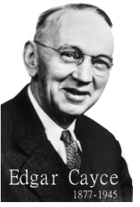

20世纪最伟大的灵性解读大师：埃德加·凯西
爱德加·凯西（Edgar·Cayce）是二十世纪记录最多、保存得最好的灵异大师。他的杰出能力之一是经过自我导入而进入一种催眠/入定的失去显意识的状态，在此状态下他可就任何人、任何事件、任何时间、任何地点的任何问题，给出答案！从伤风发烧到肿瘤癌症的各种病症、从百万年前的上古文明到将来地球的地貌改变、从星际空间到地下深埋的石油宝藏、从创世纪到人类的未来，他均可回答。他自1901年起得第一个催眠解读，至1944年的最后一个的43年时间里，他做出记录在案的解读报告超过一万四千个。现这些解读均存档于爱德加凯西基金会(ECF, Edgar Cayce Foundation)。 http://www.edgarcayce.org
一、 
爱德加•凯西于1877年3月18日出身在美国肯德基州的霍普金斯维尔(Hopkinsville,
Kentucky)。他的童年生活和许多农村小孩一样，普通而充满欢乐。他是家里5个孩子中唯一的男孩。 他的童年时期正是基督教革新的活跃时期。
霍普金斯维尔所在的县叫基督徒县(Christian County)。 浓重的宗教气氛影响了他的一生：
很小的时候他就决定每年将圣经从头到尾读一遍，并立志成为一个能够帮人治病的传教人。当然，当时没有人能够想象的出他理想会以一种什么方式实现的。
不久后，小凯西展现出了再也无法用“孩子的想象”来解释的能力：他只须在课本上睡上一会，
就可以有对那书本的所有内容的全部记忆！有人发现不管是课本，书籍还是文件---其内容早超出小学生的知识范围---凯西都可以在上面睡一会，然后一个字一个字的背出来。这本事帮助了他读完了八年级。
但因家境贫穷须找工作以协助家计，凯西没再继续上学。他在书店做伙计时，他运用了他的特殊技能，将所有书目索引放在头下小睡，而记住了书店的所有物品的名称、所在位置、价格，从而极大地帮助了客人和销售人员。
书店老板因此升牵凯西为售书员。
1895年初夏，他遇到并深深地爱上了格秋小姐(Gertrude Evans)。他们于1897年3月14日订婚，并决定在他有能力维持一个家庭时结婚。
1898年6月，书店易主，他去了肯德基州最大的城市路易丝维尔去打拼。 他的目的很明确：挣足够多的钱成立家庭。
1899年的圣诞节期间，他和他父亲一起作了保险经纪，同时他原来的雇主主动要求他作销售代理。这样仅仅23岁的他的月收入达200美金，这是当时许多人奋斗一辈子都无法达到的高月收入。
他自己也觉得不用多久就可以成家了。
二、
不幸的是，一天他突然染上了严重的喉炎，他无法发出声音。他到处找医生及喉部专家检查，甚至从欧洲来讲学的一个喉科专家也来了，但无法治愈那毛病。一周、半月、几个月过去了，他不得不去找一了个不需要讲太多话的工作：摄影师的暗房助理。
1900年的初期正是舞台催眠术在美国流行的时期。一个号称“笑王”的催眠师哈特先生(Hart)碰巧在凯西所在的小城的荷兰剧院(Holland Opera
House)展示其催眠技术。他听说了凯西的病情，自告奋勇地要用催眠术来帮忙。
在第一次实验期间，哈特将凯西催眠后指示他恢复他的声音。 在荷兰剧院的众多观众面前，被催眠的凯西用正常的声音回答“笑王”的询问。现场的人们兴奋不已。
然而，当凯西从催眠状态唤醒后，他的声音依旧沙哑，几不可闻！类似的实验后来又重复了几次，催眠中的凯西在每次的实验中均可正常讲话，醒来后病情照旧。当地的报纸对这现象有过热烈的讨论，很多人认为催眠会治好凯西的病。
经过无数次被几个催眠爱好者对凯西施行得催眠治疗，使凯西对催眠术几乎失去了信心。这件事传到了一位在纽约的催眠专家的耳中，他建议凯西再做一次实验。并指出在这次催眠中，主导催眠的人应询问被催眠的、已经完全被潜意识主导的凯西自己，去诊断喉炎的原因和建议治疗方法。凯西抱着一线希望再次被催眠。当地的一位学过催眠和正骨疗法业余医生林爱尔(Layne,
Al)主导了这次催眠。正如专家所料，当林医生询问催眠中，也就是显意识已被放在一边的凯西解释这个身体出了什么问题、如何治疗？躺在沙发上的凯西说这喉部的毛病是一个典型的“由心理因素而造成的生理现象”。他接着说需要的非显意识状态下，通过主导催眠的人的指示，增加喉部的血液循环，记可除去这个病症。在林医生指示凯西“增加喉部的血液循环”后，林医生和凯西一家人惊异地看到凯西的上胸部和喉部的颜色变得深红，皮肤的温度也随之增高。这样维持了二十分钟左右，“睡着的”凯西指示林医生在叫醒他之前，须将其血液循环恢复正常。凯西从催眠中醒来后，立即发现自己恢复了已经失去近一年的声音。
这一天是1901年3月31日，是凯西可以正式灵异解读的标记。
年轻的凯西自己的人生计划是成为一名摄影师，并赶快结婚。他自己不知道处在无意识状态下的自己说了什么。但见证了这异常现象的林医生却有自己的想法。他要求凯西帮他试试折磨他多年、医生们说已无法治愈的胃部毛病。
三、
凯西虽怀疑自己的能力，但觉得欠了林医生的一个人情，就同意做一个解读以满足林医生的好奇心。躺在沙发上看似睡着的凯西，以正常的语言精确地描述了症状，且推荐了包括草药、食物及锻炼的方法。随着状况的好转，林医生对凯西的能力更是确信不疑。更是不断地把凯西找了诊断自己的病人。
凯西感觉到自己处在一种自己无法控制的状态。因为他茫然不知这所谓的“解读”的机理和正确性，只上过八年学的他对医药、诊断也是一窍不通，更糟糕的是，他根本不知道失去显意识的他到底讲过什么。除非林医生把记录详尽地解释给他听。凯西一方面祇想过一个普通的有家庭的基督徒的生活，而林医生则劝凯西说他可以用他的才能来帮助别人。最后，凯西同意在两个条件下继续免费合作：1、如果他们发现催眠中德凯西所说的对任何人有害，他们将停止解读，2、林医生应知道凯西的第一职业是摄影师。
在早期的解读中有最详尽记录的是为一个6岁的女孩，艾米(Aime
Dietrich)做的。她的医生说在艾米2岁时，她染上流感而导致了大脑停止发育。至今已有4年之久，而且伴有不时的全身痉挛，她的脑袋几乎是一片空白，连父母的名字都叫不出。她的家为此已访遍了全城、全州和附近十几个州的名医，艾米的病却愈来愈重。在林医生引导下，催眠中的凯西指出病发的真正原因是小艾米在染上流感的前几天下马车的时候滑了一下，马车的踏步碰伤了她的脊椎骨，流感菌感染了她损伤的部位，从而导致了痉挛和大脑的停止发育。艾米的妈妈(Minnie
Dietrich)立即记起了艾米摔的那跤。
病因找到了，凯西同时推荐的治疗方案也不复杂：正骨疗法。林医生立即施行。随后又经过几次检查性解读，催眠中德凯西终于确认了林医生的操作。几天后，小艾米几年来第一次叫出她患病前最喜欢的玩具的名字。数周后，她突然开始又认识了她的父母，并且间隙性的痉挛也完全停止了。三个月后，她渐渐地跟上原来拉下的时光，成为一个正常的、健康的女孩。
就像其它许多案例一样，艾米的病愈帮助了凯西更多的认识了自己的非常能力，但并没有改变凯西的根本态度：可以免费为人做解读，但仍应做好一个摄影师工作去成立家庭。1903年6月17日，凯西终于迎娶了他等了六年之久的格秋小姐，并在一年后成立了自己的摄影室，同时凭他对圣经的热爱和一年通读一遍的功力，他成为了主日圣经课堂最受欢迎的老师。
凯西的大部份时间都花在摄影室里，他的一幅作品“肯德基佳人”(A Kenterkey Belle)甚至获得过在圣路易斯( St. louis,
MO)举行的全美摄影师年会的最高荣誉。他的摄影生意也十分红火，不久就有了第二间店。但两场大火毁了他两家摄影室和花重金从纽约租来展览的各种藏品。他不得不将妻子和儿子休林(Hugh
Lynn Cayce)送到老家霍普金斯维尔，自己一个人在外面全力工作去养家和还债。
四、
在他回家探亲期间，一个名叫开契门(Dr. Wesley
Ketchum)的医生通过在自己和他的病人的解读实验中，从不信、怀疑到彻底信服了凯西的看病诊断的灵异能力。并开始用凯西的解读去治疗各种病症。1910年，开医生提交了一份论文给美国临床研究学会(American
Society of Clinical Research)，指出凯西现象是医学奇迹。同年10月9日， (New York
Times)登载了一篇有关凯西特殊能力的报导。其标题为：“无学术造诣者在催眠中成为了医生”(Illiterate man becomes a doctor
when hypnotized)。凯西扬名全国。要求的解读的人和信件涌入霍普金斯维尔。凯西最终与开医生，Albert Noe---一本地豪华酒店的老板及父亲成立了“灵异解读股份公司”(Psychic
Reading Corporation)。凯西也有了自己的“凯西艺术工作室”(Cayce Art Studio)，同时他也是“灵异诊断师”(Psychic
Diagnostician)。
随着各种成功的医疗案例和许多媒体的深入报导，凯西的名声传得更广了。一个哈佛大学的代表，以暴光“特异能力”骗术而著称的蒙斯特堡教授(Dr. Hugo
Mnsterberg)造访凯西，目的在于揭穿凯西。但经过一周的调查访问患者和医生及许多在场的目击证人，同时自己也亲自参加了几个解读的整个过程，教授终于肯定了解读的正当性和有效性。
随着愈来愈多的诊断解读的给出，有一个问题愈来愈成为焦点：找不到能够按解读建议的治疗方法治病的医生。在二十世纪初期，整体疗法(holistic
Therapy)根本被认为是不科学的。除非到了万不得已，很少有医生能够认同这些概念，如一种树皮制成的冲剂可以治愈冬季受风的喉部炎症、拔掉浅菘梢匀镁癫』颊呖蹈础⒐喑鸵臣盎乃枷肟梢砸街闻Ｆぱⅲ?917年给出的一个解读甚至建议换人体器官---
1954年世界才有第一例。为了能让解读建议的药物及处方顺利的施行，一个医院成为凯西的梦想。
这一梦想，让他走了一段不小的弯路。他觉得可以用解读通过找到石油来得到建立医院所需的资金。在德克萨斯州的四年中，他的解读帮了别人挖出了石油，自己放弃了的钻井点其他人也可以钻出石油，唯独他自己的石油公司无法成功。其实，解读早已给出了他不成功的原因：解读信息不能以获取物质利益为目的，而且一些他的合伙人也并不与他怀有同样建立医院的梦想。
在1923年以前，来要求解读的大部份是与医药和身体健康有关，此类解读我们称之为“健康身体解读”(Physical
Reading)，另有一少部份是关于找人，找石油，赛马的。10月11日，在俄亥俄州代滕市的菲力普宾馆(Dayton, Ohio, Phillips
Hotel)，应一位印刷商人的要求做的关于星象的解读。在此解读(5717-1)的结尾，“睡着”的凯西说了一句非常奇怪的话：“他以前是个和尚”。大家都知道这个人这一生从未做过和尚。这一句话打开了一个崭新的研究方向---轮回转世(Reincarnation)，但同时却让凯西陷入了一个两难的境界。
五、
从无数次的，包括自己的、妻子的、儿子的、周围亲戚朋友的、来要求解读的病人的准确解读和事实中，他已对解读所给的信息毫不置疑。但轮回转世的概念根本让他这个标准的基督徒无法接受。他为此困惑而虔诚地祈祷。同时他也做一些研究并为此做了几个解读。解读建议他用转世的思维再从头到尾读一遍他已读了三十多遍的圣经，他会发现原来隐藏在其中的哲学概念揭示出了生活的目的和最终的归一(Oneness)。渐渐地，凯西发现转世的概念与基督教的教义并不冲突，相反成为作为基督徒的他的一个重要组成部份。
从此，有了“生命解读”(Life Reading)。这类解读主要是讲述个人的前世生活及此生的目的和潜力。自然地，解读扩展到心智和灵性(Mental and
spiritual)的谘询，哲学，冥想，解梦，超感觉，历史，古代文明，圣经，星象学，灵魂伴侣等等。
因为持续增加的解读要求，凯西放弃了他的摄影工作室。开始为他的医院寻找资金支持。他也开始接受要求解读人的赞助，但他永远不拒绝无法付款的人。经过一段时间，有一些人愿意赞助实现凯西有一个医院的梦想。其中一些人想让医院设在芝加哥，还有一些人想设在俄亥俄州代滕市。可以，解读本身已数次明确的告诉凯西：医院应在或靠近弗吉尼亚州的弗吉尼亚海滨市(Virginia
Beach, Virginia)。最后，一个来自华尔街的纽约商人Morton Blumenthal 出资在弗吉尼亚建立了医院。
1923年秋天，凯西请了一位专职速记员兼秘书黛维斯小姐(Davis,
Gladys)。1925年9月，凯西一家和戴维斯搬入弗吉尼亚海滨市。1927年，全美调查者协会(Association of National
Investigators)成立，目的在于研究和挖掘解读和所包含的信息，其立会铭言为“为了彰显对上帝和人类的爱”。1928年11月11日，凯西医院开业。来自全国的病人们在此获得解读，并由训练有素的医护人员治疗。“睡着”的凯西每天两次给病人解读，诊断病症、推荐包括饮食到手术的各种疗法。我们可以看出凯西的治疗方案从没有局限于某一类，而是在所有的疗法中给出最适合的方案。例如，在他有记录的诊断出六十多例的阑尾炎中，仅有四例解读建议动手术，这包括他自己的一例。
六、
凯西多次警告的股票市场终于在1929年10月29日崩塌。他的华尔街的支持者们显然从解读中受惠不小。亚特兰大大学在1930年秋，仍由他们支持成立。但到1931年，大萧条的最严重的时候﹐华尔街的股票商终于撤出支持。凯西医院和亚特兰大大学先后关门。
情况似乎又回到了起点。但这一次凯西有一大批对解读有强烈信心的追随者。“探索及领悟协会”(Association for Research and
Enlightenment, Inc. (A.R.E.))宣告成立。其目的在于调查和传播解读和解读所包含的信息和规律。这个机构将研究兴趣集中在整体疗法、超感觉(ESP)的机理、入定冥想(Meditation)、灵力调理(Spiritual
Healing)、梦的解释和死后生命的研究。当有人凯西如何才能让自己变得更有特异能力时，凯西说当一个人的目标设在灵性建设方面，他就会有特异能力，因为超自然能力根本就是灵魂的特征(for
psychic is of the soul)。凯西认为特异能力是灵性觉醒的结果。
随着年龄的增加，凯西在醒着状态的特异能力也有所加强。又一次他在室内突然感到莫名的悲伤，他知道在欧洲战场上的三位同教堂的年轻人回不来了。他还可以看到环绕在人体周围的光环(Aura)，根据这光环凯西可以觉察一个人的情绪和身体状况。
他的名气随着他灵力的增加而远扬，同时不相信的也大有人在。许多人专门来到弗吉尼亚海滨市要来揭穿凯西骗术，但大多数都失望而归，更有一些人从此相信了并要求凯西给自己做解读。一个忠实的天主教作家托马斯‧苏各儒(Thomas
Sugrue)抱着暴光凯西“诡计”的想法来到这里，结果成就了第一本关于凯西的传记“一条大河”(There is a
River)。此书于1943年出版。当时最流行的杂志“Coronet”派出一名记者Marguerite Harmon
Bro去调查，她的文章“弗吉尼亚海滨市奇人”(Miracle Man of Virginia Beach)更是让凯西扬名。她的儿子Harmon H.H.
Bro在1955年的芝加哥大学的博士毕业论文也是以凯西现象为题的。
二战期间，要求解读的信函、电报成堆地涌进凯西的家。尽管解读本身一再警告他每日不要做超过两次解读，否则将会对他的身体造成严重损害，但凯西为了那些急需帮助的病人、那些焦心战场儿女安全的父母们，他给了每天多达八次的解读。即便这样，秘书黛维斯小姐的日程表已将解读排到了两年后。
七、
1944年春，凯西的身体变糟了。他自己要求的解读强烈建议他休息，但他同时有强烈的责任感去给急需的人提供帮助。最终，中风将他击倒。就像第一个解读给他自己一样，最后一个解读与1944年9月17日为他自己而做。解读说他需要休息。凯西夫人问需要“多长时间”，回答是“直到他康复或死亡”。1945年1月3日，凯西逝去---用他自己的话说“走进上帝的另一扇门”。
秘书兼速记黛维斯小姐自十八岁起就为凯西工作。在凯西过世后她共计整理出为五千多人所做的一万四千多份有记载的解读。今天我们能够简易清楚地查阅参考各类解读，实应归功于她的细心收集、编排及整理。因为解读的数量惊人，索引工作直到1971年才完成。黛维斯在她81岁、1986年过世前一直担任凯西基金会的秘书并主持电脑化工作。今天我们可以从CD-ROM上得到完整的解读。
凯西大儿子修林凯西接过他父亲的工作，继续将解读的影响扩大。至1982年他过世时，协会成员增加了近十倍，使弗吉尼亚海滨市成为全美最有影响的“灵修中心(Spiritual
Center)”。ARE协会的图书馆也成为仅次于梵蒂冈的世界第二大的超自然学(Metaphysical)或称灵学﹑形而上学图书馆。
通过讲座、出版物和会员制度，探索和领悟协会(A.R.E.)为那些热心于凯西工作的或需要相关信息的人提供最新和关于解读的研究资料。“凯西基金会”( Edgar
Cayce
Foundation)是个独立的法人。其功能是提供和资助那些进行凯西资讯和其它流派的比较研究。1931年关门的亚特兰大大学于1985年重新招生并设立硕士学位。保健和恢复青春中心提供解读中的医学资讯，凯西/瑞理按摩师学校面向全球招生。所有这些组织均得益于那个来自于肯德基州的摄影师给出的资讯和对其深入研究的结果。
纵观他的一生，凯西从没认为自己有任何特殊超能力，虽然解读中的世界发展、医学、考古等等均一一被证实，他也不认为自己是个二十世纪的预言家。而且解读从没提出一套信仰教义，相反建议每个人以自己的生活去检验解读所提供的生命理念。尽管凯西自己是个基督徒，一生中每年从头到尾读一遍圣经，但他的解读却透出全世界信仰系统比较研究的信息。解读所隐含的原则是生活的同一性、包含性和对世界包括佛教、基督教、天主教、道教等各大宗教的理解。
八、凯西一生大事记
1877 3月18日，爱德加凯西出生在肯德基州的霍普金斯维尔城(Hopkinsvelle)南约8英里的农场
1880 2月22日，格秋小姐(Gertrude Evans)出生在霍普金斯维尔市
1881 6月18日，凯西目睹他的祖父(Thomas Jefferson Cayce)淹死在一个池塘里
1884年 开始比弗例学校(Beverly Academy)上学
1887年 成为Old Liberty Chinstian教堂司事(Sexton)
1888年 得到属于自己的一本圣经，开始每年通读一遍
1890年 天使显现。第二天挖掘出自己通过在课本上睡一下，就可记住全部内容
1893年 在他8年级的时候辍学，在他叔叔的农场做工以维持家计，并开始在周日圣经课堂讲课，向往成为牧师
1894年 1月，全家搬入霍普金斯维尔市，开始在书店打工
1897年 3月14日，与格秋小姐订婚
1898年 丢了书店的工作，转到大城市路易斯维尔( Louisville)并在J. P. Morton & Co.找到工作。不久，被选为Glad
Helpers(一个专门帮助医院和监狱的人士的民间团体)的主席
1899年 凯西回家过圣诞，决定留在霍普金斯维尔市。他与他父亲合伙成为保险代理，同时又兼J. P. Morton & Co.的销售代理
1900年 1月，他声带局部痲痹，无法发声。到秋季，当地的一个摄影师给了他一份学徒的工作。哈特，一个巡回催眠表演家，将凯西催眠并在催眠状态下可以正常
1901年 3月31日， 凯西为自己给出第一个正式灵异解读(psychic reading)：在林医生(Layne, Al)的帮助下，他诊断并治愈了自己的病症
==========
1902年 5月，他接受了在绿保龄市( Bowling Green)书店的工作。八月，林医生将他叫回来给一个叫艾米(Aime
Dietrich)的小女孩做催眠解读，并治愈了她
1903年 6月17日，他与格秋小姐在新娘家希而山庄(The Hill)结婚
1904年 9月，与Frank Potter合伙开张了摄影室
1905年 1月30日，黛维斯小姐出生在阿拉巴马州( Centerville, Alabama)。当地的一些医学界组织研究凯西的特异现象
1906年 12月，一场大火将他的摄影室摧毁，他重金租来的展品也全部丧失
1907年 3月16日，大儿子修林(Hugh Lynn)出世。9月，又一场大火将他的另一个摄影室摧毁
1908年 妻子格秋和儿子修林会到老家，凯西一个人在绿保龄市工作还债
1909年 8月，凯西将债务还清离开绿保龄市，一段时间后到阿拉巴马州做摄影工作。同年圣诞期间，他与开契门医生(Dr. Wesley Ketchum)见面
1910年
10月9日，纽约时报发表了一个长篇文章介绍凯西的特异能力。凯西回到老家霍普金斯维尔市开张自己的摄影工作室。同时与他的父亲、开契门医生、一个宾馆的老板组织“灵异解读股份公司”(Psychic
Reading Corporation)。这是他平生第一次有规律地给出有关医疗案例的解读
1911年 2月，芝加哥检查者报(Chicago Examiner)报导了凯西。3月，凯西与其合伙人赴芝加哥为文章做解读。3月28日，二儿子Milton
Porter出生，后死于5月17日。George Dalton的案例轰动一时。妻子格秋染上肺结核。解读帮她完全康复。
1912年 1月，哈佛大学教授蒙斯特堡博士(Dr. Hugo Mnsterberg)前来调查。凯西合伙人关系破裂。他回到阿拉巴马州做摄影师
1913年 在阿拉巴马州的Selma市开张自己的摄影室。秋季，妻子格秋和儿子修林到了Selma市
1914年 1月，修林在摄影室点燃闪光粉，严重灼伤双眼。医生建议摘除眼球，但解读挽救了修林得双眼
========
1918年 2月9日，小儿子爱德加爱文斯出世
1919年 为了给他的医院筹集资金，凯西与人合伙去德克萨斯州找石油。他前后花了四年时间，无功而返
1923年凯西返回Selma市。是年10月，雇用了速记员黛维斯小姐。十八岁的黛维斯小姐从此成了凯西的家和工作的重要部份。解读的一个重要里程碑：在一个为俄亥俄州代滕市(
Dayton, Ohio)的一个商人Arthur Lammers做的关于星象学的解读中，涉及到轮回与转世。11月，应Lammers先生之邀，凯西全家迁往代滕市，并就哲学、灵学(metaphysical)、星象学等题目做解读
1925年 华尔街的股票商Morton Blumenthal同意帮助建立医院，地点由解读选在弗吉尼亚州的弗吉尼亚海滨市(Virginia Beach,
Virginia)。9月，凯西一家以及黛维斯小姐搬到弗吉尼亚海滨市
1926年 10月26日，凯西的母亲过世
1927年 5月6日，全美调查者协会(Association of National Investigators)成立
1928年 11月11日，凯西医院落成
1930年 9月22日，亚特兰大大学开始招生
1931年 2月26日，全美调查者协会解散，28日，医院关门。6月6日，A.R.E---探索和领悟协会(Association for Research and
Enlightenment)成立
1937年 4月11日，凯西的父亲去世
1941年 10月，大儿子修林与泰勒小姐(Sally Taylor)结婚
1942年 6月，小儿子爱德加爱文斯与柏恩小姐( Kathryn Bane)结婚。10月7日，查尔斯托马斯出世。解读指明他是凯西的祖父的转世
1943年 3月，凯西的第一本传记“一条大河”(There is a River)出版
========
1943年 3月，凯西的第一本传记“一条大河”(There is a River)出版
1944年 9月17日，凯西为自己做最后一个解读
1945年 1月3日，凯西去世，终年67岁。4月1日，妻子格秋去世终年65岁
1946年 修林从欧洲战场回来重振A.R.E
1948年 爱德加凯西基金会成立
1967年 “睡着的先知”(The Sleeping Prophet)出版，并成为畅销书
1976年 查尔斯托马斯任A.R.E主席。凯西家第三代人为此事业奋斗
1984年 A.R.E开始发行“内心探索”(Venture Inward)杂志
1985年 亚特兰大大学重新开始招收研究生
1987年 基于解读理论的“凯西/瑞理按摩学校”(Cayce/Reilly School of Massotherapy)开始招生
1993年 凯西的解读电脑化。大众可通过CD-ROM和网络直接查询有关解读
爱德加凯西是二十世纪记录最多、保存得最好的灵异大师。他的杰出能力之一是经过自我导入而进入一种催眠/入定的失去显意识的状态，在此状态下他可就任何人、任何事件、任何时间、任何地点的任何问题，给出答案！从伤风发烧到肿瘤癌症的各种病症、从百万年前的上古文明到将来地球的地貌改变、从星际空间到地下深埋的石油宝藏、从创世纪到人类的未来，他均可回答。他自1901年起得第一个催眠解读，至1944年的最后一个的43年时间里，他做出记录在案的解读报告超过一万四千个。现这些解读均存档于爱德加凯西基金会(ECF,
Edgar Cayce Foundation)。更多关于爱德加凯西的生平，按此进入... ...
2. 什么是A.R.E.?
A.R.E.是探索与领悟学会(Association for Research and
Enlightenment)的缩写，是一个由一群想通过研究、探索、学习以至领悟的人们，组成的非营利团体。每一位来访人员，通过研讨会、学习小组、图书资料等等，均可从凯西的解读和有关的研究资料中找到关于个人、世界或人类的启迪。各个年龄阶层的人均可以自由加入关于各个领域的研习，这些领域包括整体健康疗法(Holistic
Health)、梦和解梦(Dream Interpretation)、轮回转世(Reincarnation)、超感知(ESP)、思想的力量(Power of
Mind)、打坐与冥想(Meditation)、星象学和数字学(Astrology And Numerology)、个人灵力领悟(Personal
Spirituality/Enlightenment)。
我们不是在建立新的信仰！凯西的解读明确指出这一点，甚至建议会员保留原来的宗教信仰。我们认为世界各大宗教，均有其合理的一面，要注重其同一性。例如，你完全可以将基督教里的“基督的意识”(Christ
Consciousness)理解为佛的大智慧、道的内丹、梵的一等等。老子说“有物混成，先天地生。”“吾不知其名，字之日道”。
3. 什么是解读(Readings)？
根据某人或某个团体的要求，凯西在约定的时间进入催眠/入定状态。速记员坐在他附近，记下他所说的所有的话。主导人将此个人或团体的当时所在地址报给凯西(当时他/他们可在现场，也可在千里之外)，当凯西说我们找到了，随后有关信息就会给出。当说明和问题都完成后，催眠中的凯西会说：“我们到此结束。(We
are
through.)”。令人惊异的是醒来后的凯西根本不记得自己说过什么，他的八年级教育的显意识甚至连记录的解读都需要别人帮助解释才明白。特别是有关医学、历史、地理的名词，他干脆放弃了要搞明白的想法。催眠/入定中的他人事不知，失去全部五官感觉：有人曾经当众用针管扎他，甚至拔掉过他的手指甲。他醒来后才有疼痛的感觉。
解读分为身体健康解读(Physical Reading)和生命解读(Life
Reading)。前者占了解读的大多数，有9000多个，是就某人身体健康与疾病所给出的信息；后者就某人所有的生活经历对今生的影响给出总结和指导；还有一部分是关于解梦、灵力修行、寻宝、找人、股票市场甚至赌马的。通常生理解读的程式是这样的，当主导人看到凯西的手从头部放到腹部，并且眼帘微微闪动时，就会开始说(如果主导人错过这个信号，凯西会进入睡眠状态)：
“你将找到______(人的姓名)，他在_______(此人所在地址)。你将仔细了解并彻底检查他的身体，告诉我你了解到的状况；给出现存问题的起因，并提出为此身体解决问题的方案。你要以正常的语速清晰地表达。你将回答我会提出的问题。”
其它解读与此大同小异。凯西通常说“我们发现了这个个体”。如果这个人不是第一次，凯西会加上，“我们以前见到过(这个个体)”。这个“以前”，即上一次解读，有的是几周前、几年前，有一个人的上一次解读甚至是三十年前的事！
凯西做出过2000多个生命解读。轮回转世成为这生命解读的基石。正是从以前(包括前世的)所作、所说、所想，部分地造就了今天的你和你的生活。解读指出报应、自由意志、宿命和恩典的交织，将决定你的未来。
4. 解读的号码是如何排列的？
解读的号码由两部分组成，如294-9，第一部分294是指代号为262的人/组织，第二部分9是指此人/组织的第9次解读。用号码来代表人是为了保护隐私。爱德加凯西基金会存有各种原始记录和相关调查报告。
5. 凯西的解读信息是从哪里来的？
凯西仅有八年级的教育程度；除了圣经外，平时的阅读范围很窄；业余爱好也只是钓鱼和整理自家花园；他的摄影职业似乎也帮不上什么忙；他的社交圈子中也远不是由知识渊博人士组成，他的五花八门、无所不包的信息是从哪里来的呢？
早在1910年，凯西的第一个正式合作者开契门(Dr. Wesley
Ketchum)医生，就这个问题，请教了解读后，开医生对提供这样的解释：就像其他人的潜意识一样，催眠/入定中的凯西的潜意识同样顺服于引导者/催眠师的建议和引导，同时他的潜意识能够与要求解读者的潜意识交流并获取/解释信息。我们知道潜意识从不遗忘，而且以显意识无法反应的速度记忆。例如，人的眼睛对每秒钟闪过的24/30幅的电影画面丝毫不觉得有任何间隙，但潜意识却能记住所有的画面；一个催眠师可以很容易地让他的顾客，在催眠中回忆起显意识毫无记忆的3岁时的一场大雨之夜或2岁时的生日会，甚至刚出生时所在的病房和周围的医生护士；一个好的往世催眠师更可以将人带到前世的一些经历，以帮助解决现世的一些生理心理的痛楚；还有的催眠师可以将人带到两世之间的经历，等等。总之，人的潜意识是我们从开始到现在为止的所有的所思、所说、所为的记忆仓库。而凯西(其实受过训练的任何人都可以)的潜意识通过与客人的潜意识的交流，而获取相关的生理、地理信息：客人当时所穿的睡衣、此人的血压、脉搏、身体各个部分的运行和症结所在，当然也有历世留下的事件、与其他个体的关系和思维格局等等。这是解读信息的第一个来源。
这里附有人类的思维模型，希望对你的理解有所帮助。
解读的另一个信息来源就是生命之书，或称阿卡西记录(Akashic Records)，解读解释说这不是一个文字记录，而是记载在“时空卷轴”上的活动记录(
activities on the skein of time and
space)。凯西以及一些通灵人士，可以得到部分这些记录，这是凯西生命解读信息的主要来源。(请参阅什么是生命之书一问)。我们有时在梦境中也会被展示一些记录的片段。
第三类信息来源我们称其为灵界个体，包括没有转世的和已经去世的，就是在灵界的那些人(个体)。在一个解读中，凯西就是否可以与灵界个体交流的问题做了回答：“灵魂离开物理层次后，会留在那个空间层次，直到他们的发展达到一定的水平继续向前，或者为了他们的完善而回到这里。当他们在这个交流空间层次(the
plane of
communication)，或者在这个范围内，任何(个体)均可与其交流。”(解读#3744-3)。1933年10月9日，解读5756-9，一个操著英国口音的个体，通过凯西之口传递信息；1934年7月9日，在给凯西夫人的一个亲戚的身体解读(569-22)结束时，凯西说有些个体想要交流，当凯西夫人(解读主导人)同意后，所有在场的人听到对话的一半，就像在看凯西打电话一样，听不到另一半的声音。后来才知道，凯西夫人的祖母、叔叔、姨夫、弟弟和凯西夫妇的仅活了几个月的儿子等一群人，过来与他们交流，看来他们似乎在准备下一次转世。当然，最重要的是一个叫麦可(Michael)的个体，在解读262系列里多次通过凯西之口，传递灵修的信息(262系列共130个解读，是“寻求上帝”(A
Search For God)一书的信息来源)，这个麦可自称是天使长(Archangel)，归路之主(lord of the
way)。(注：基督是路，主中之主。Jesus is the Way, Lord of
lords)。大家有时间可查询附近的学习小组。在这个信息来源中，凯西扮演的这是个媒介通道。
6. 什么是生命之书(Book of Life)/阿卡西记录(Akashic Records)？
在一个解读中，凯西是这样回答这个问题的：“就是每个个体通过耐心写在时空卷轴上的记录。”( upon the skein of time and space,
through
patience)。他接着说：“当自我与无限相调合相和谐时，她可以被打开；当调谐与那种意识层次时，她可以被阅读”。在其他的一些解读中，我们可以了解到，行为、言语、思想都是物，他们在时空卷轴上留下印记。像收音机调到一定频率就收到某个台一样，我们将自己调整好，也可以接触到时空卷轴。
7. 有上古文明吗？
当然有！例如，在对1600多人做的生命解读中，有700多人被提及有亚特兰蒂斯/大西州(Atlantis)或蓝玛尼亚(Lemuria)/亩(Mu)大陆的前世生活经历。根据解读，蓝玛尼亚是一个横跨太平洋的古老大陆，而亚特兰蒂斯是一个东起地中海，西至现在加勒比海的一个古大陆。解读对于亚特兰蒂斯的资料较多，有一点得益于现在仍在世的凯西的二儿子爱德加爱文斯。由于他的生命解读中有关于亚特兰蒂斯的经历，所以激起他对这一文明探索的兴趣。有兴趣的可以将“Mysteries
of Atlantis”一书找来一读。
解读所述的亚特兰蒂斯远早于柏拉图在他的「提玛友斯」(Timaeus)和「柯里西亚斯」(Critias)中提及的时9000多年前的亚特兰蒂斯(事实上，解读所述的亚特兰蒂斯的最后一个大岛沉入大西洋中的时间，正与柏拉图的相合！)。数十万年前，人类就开始在亚特兰蒂斯生活。据解读的描述，约五万年前，亚特兰蒂斯的技术成就就超过了当今。但由于对资源和技术的误用、滥用，加上地极转换等因素，亚特兰蒂斯于五万年前、二万八千年前两次巨变，大部分大陆沉入水中。特别是后一次，解读说，造成圣经和其它古籍所记载的世纪大洪水！终于，第三次，就是最后一次的灾难发生在公元一万多年前，亚特兰蒂斯最大的岛波塞地亚(Poseidia)终于彻底沉入大西洋。解读并没有让我们完全失望：亚特兰蒂斯人带著他们的有关记录逃往各地，造成埃及、尤加敦(Yucatun)/马雅(Maya)等地的文化复兴。解读甚至给出三处现存的记录所在：将会在佛罗里达附近海里升起的波塞地亚的一个庙宇里；在美洲的尤加敦(Yucatun)地区；在埃及金字塔的一个未发现的“记录殿”(Chamber
of Records)里。按此进入更多中文说明... ...；按此进入更多英文资料... ...
8. 解读给出的人类演变的时间表是什么样子的？
解读说人类来到地球之前，地球经历过植物王国和动物王国阶段。约一千零五十万年前，灵魂(人类)来到地球，先是以来去自由的“思想体(thought
form)”形式在地球嘻戏、伥徉，随着越来越长的时间投入，我们的波动格局(Vibrational
Patterns)降低了，渐渐地固化(Harden)在一些动植物体中。享受物理刺激和伴随而来的痛苦的同时，我们渐渐地忘记了自己的本来面目和身份。二十万年前，一个救赎计划开始施行。人类进入参与演变已久的一种类人猿体中，宣告人的时代的来临。五个人种在地球同时出现：黄种人(戈壁地区)、白种人(高加索山区)、棕色人(蓝玛尼亚)、黑色人(非洲)、红色人(亚特兰蒂斯)。至二万八千年前，人类的技术发展造成了地球巨变。其代表亚特兰蒂斯大陆陷入水中，并给地球带了灭顶的水灾。请参看上古文明...
...
9. 死亡是怎么回事？
凯西说过多次，死亡仅仅是跨入上帝的另一扇门。我们的身体确实会腐烂，因为它不来自于永恒。源于尘，归于土。但是，那身体并不是我们，仅仅是我们用它来在此地、此时体验和学习的载体。我们是灵，不灭的灵魂，从永恒到永恒。我们利用身体，就像司机开车一样。车不是司机，身体也不是我们。但我们应保养好身体/汽车，让我们有更长时间的学习、体验的机会。不要埋怨车子不好，不要埋怨道路不平、不要埋怨他人的影响，照顾好自己，不伤害别人，等到有一日，走过上帝的另一扇门，你会发现对死亡的恐惧是多么可笑。下一次，你也许会选一辆特别的车子。一辆红色的法拉利怎么样？！
10. 什么是ESP？
超感知(ESP, Extrasensory
Perception)就是指不是用身体五个基本感知系统而来传递和接受信息的能力。有许多种类的超感知，研究者们将其分为几类以帮助我们理解其机制：(1)
心灵感应术(Telepathy)；(2)超视觉，或称透视(Clairvoyance)；(3)预知(Precognition)；(4)后瞻(Retrocognition)。根据凯西的解读，我们每个人都可以训练和使用超感知！这些根本不是所谓的“超自然现象”，恰恰是我们原有的能力，随着灵力的觉醒，他们会自然恢复。我们是灵，就像听、闻、触、尝、看对于我们的身体一样，特异能力仅仅是灵的自然特性。按此进入更多的解释...
...
11. 解梦有什么用处？
基本来说，梦是基于我们的所想、所言、所为来帮助我们更了解我们所经历的生活。她们可展示出驱动我们的欲望、帮助我们明白身体的需要，也可以提供更有创造性的生活洞察力、协助我们做出更明智的决定。解梦的过程就像与一个自己完全信赖的、明了我们一切的智者对话，并得到他的指导。生活的答案就在那儿，就看我们如何去梦中搜寻。解读说没有在我们生活中发生的重要的事件，没在我们的梦中展示过。如果我们每个人都能够很好地解释和执行梦的指示，我们将非常容易地完成此生的任务和目的。按此了解更多的中文解释...
...；按此阅读英文解梦... ...
12. 我们从哪里来？到哪里去？
解读认为，我们是按照上帝的样子造出的。我们曾经有过同等的法力，同样的自由意志。但正是这能力和自由意志，我们选择了自我荣耀、自我表达，选择了远离上帝(原创力、道、一)，我们在此努力寻找回家之路
与身体有关的资讯
解读中有关健康的资讯包括一些非常简单易行的建议。这些建议表明了凯西的身体的理解早已领先与当时的西方医学对身体的认识，而与东方医学理论的思维更为接近。这些基本的理论包括：平衡的饮食、适度的锻炼、情绪对身体的重要性、以娱乐放松去达到生活的平衡、有让身体保持清洁的欲望---一种从外界到内心的平衡。凯西的方法强调整体健康的保持和预防，而不是简单的病来了治病、病去了一切依旧。他是西半球健康营养学的先驱之一：每日以蔬菜、鱼类、禽类加上饮足够多的水，即可保持健康。这与一些其它饮食建议的很多红肉类(Red
Meat)和淀粉类大相异趣。有ARE协会的成员同时又是营养师，细心从众多解读中总结出健康饮食建议。有意请按此查看如何吃出健康来(Nourishing the
Body Temple) 。
凯西对身体健康并不仅仅局限于饮食调节和锻炼，情绪和态度对身体起很大的作用。他在一个解读中说，经常生气---不管是有意识的还是无意识的---都是疾病的起因之一。
许多解读都将饮食、锻炼、冥想作为整体疗法的基石。其基本原则是万物“法于自然”。所以我们会经常在解读中发现草药加上正骨疗法(Osteopathy)或水疗(Hydrotherapy)来治病。非常暗合中国的天人观。解读不仅仅从身体物理层面来治病，有时候凯西对一个人的解读从对人体内“气”(Kundalini，或Qi)的运行的讨论，到情绪对此身体的影响，又到他体内血液中电解质的平衡问题。
解读对众多疾病给出过解释和建议疗法，从粉刺、痔疮、疣，到关节炎、颠痫、精神病、牛皮癣，到生孩子、骨折、维他命缺乏证。有趣的是当代许多研究人员发现几十年前睡著的凯西对某个人建议的疗法至今仍然适用。如牛皮癣治疗方案包括了饮食的调节、脊椎骨的调整和水疗洗肠。单最近几年，有数百人得益于此。按此查看更多的信息。
在1901年至1944年间，凯西给出的解读讲述了许多将来才会有的医学疗法。例如，在1927年的一个解读中他指出“那一天---人们只需用一滴血来诊断身体状况---将会到来”(283-2)，今天的我们已将此当作平常事了。
凯西对待健康是一种立体的概念，它包括了体、智、灵(physical-mind-spiritual)三个方面的和谐。所以他认为健康的方案应包括整个个体(Entity)，而不仅是身体疾病。这一概念也是凯西解读的哲学观的一个基石：灵是生命(Spiritis
the life)，智是建设者(Mind id the builder)，体是结果(Physical is the result)。
在收到许多凯西的催眠解读报告推荐给他的病人后，用有八个学位的、有自己的洛克菲勒医疗中心的赫赫有名的纽约医生瑞理(Dr. Harold REilly)，开始认真研究解读。他立即惊讶于解读的精确诊断和治疗方案的使用以及包含在其中的基本理论。在他七十九岁时，他总结自己一生的医疗经验时说：“我只是凯西解读的一个老师和解释人，因为凯西的解读是为那一个人所做。而我则利用我的知识和医疗经验解释他想要的，然后教人们去施行。”
纵观9000多个身体解读所提供的方案，他有如下的归纳：CARE
(循环Circulation、消化和吸收Assimilation、 放松与休息Relaxation、清除Elimination)
循环：没有循环，身体的治愈能力大大折扣。治愈的过程因血液循环的增加而得到加强。而锻炼、按摩、调理疗法(例如脊椎指压法(chiropratic)、正骨法(osteopathy))有非常好的效果。
消化和吸收：有两个重要的饮食问题与此有关：1、解读反复建议每天的饮食应由80%的碱性食物和20%的酸性食物在加上八杯水组成；2、食物的烹饪方法和组合对人体的消化和吸收有重要的影响。如严格控制或取消油炸食品；香蕉不应与其它食品共食，等等。更多的有关饮食的问题参阅这里。
放松与休息：这不仅包括足够的睡眠，还包括娱乐。凯西在的一个解读中说：
“......这些问题是一个可以被称著职业失调所造成的结果；没有足够的阳光，没有足够的体力活动。太多的脑力工作，但要知道灵、智和体应和谐和统一。那些不能够在生活中有娱乐空间的、不能调谐(生命的)各个相部的，只是耍了自己，而某一天......将付出代价。”
(3352-1)
清除：清除体内积存的有害物质，清理内部器官，以恢复其功能。凯西忠告人们说不要带著垃圾过一天。他建议的方法包括正确的饮食、锻炼(例如散步)、蒸汽浴、大肠水疗、正确的呼吸法和足够的饮水。
A.R.E.的保健中心(Health and Rejuvenation Center, HRC)可以为您提供健康评估(Health
Assessment)；HRC根据凯西的解读整理出的治疗建议包括了数十种病症：痤疮Acne； 高血压Hypertension；痴呆症Alzheimer's
Dementia； 大肠急躁症Irritable Bowel Syndrome；肌萎缩侧索硬化症Amyotrophic Lateral Sclerosis；
肾结石Kidney Stones； 心绞痛Angina Pectoris； 肺癌Lung Cancer； 失声Aphonia； 狼疮Lupus；
哮喘Asthma；绝经症Menopause； 自闭症Autism； 偏头疼Migraine； 眼缘炎Blepharitis；多发性硬化症Multiple
Sclerosis； 乳癌Breast Cancer； 肌肉失养症Muscular Dystrophy；白内障Cataract； 肥胖症Obesity； CMT
Charcot-Marie-Tooth Disorder；骨关节炎Osteoarthritis； 慢性疲劳征候群Chronic Fatigue Syndrome
(CFS)；柏金森症Parkinson's Disease； 肝硬化Cirrhosis of the Liver；前列腺癌Prostate Cancer；
冠心病Coronary Heart Disease； 前列腺炎Prostatitis；克隆氏病Crohn's Disease； 牛皮癣Psoriasis；
膀胱炎Cystitis； 类风湿性关节炎Rheumatoid Arthritis； 抑郁症Depression； 硬皮症Scleroderma；
二型糖尿病Diabetes Type II；鼻窦炎Sinusitis； 痛经Dysmenorrhea； 中风Stroke； 癫痫Epilepsy；
耳鸣Tinnitus；纤维肌痛Fibromyalgia； 结核Tuberculosis； 血友病Hemophilia； 溃疡性结肠炎Ulcerative
Colitis； 痔疮Hemorrhoids； 静脉曲张Varicose Veins； 丙型肝炎Hepatitis C；白斑Vitiligo；(英文参考,
English Version, 我们会陆续将中文版贴上来)
应该强调的是，凯西并没有提供“奇迹般”的秘方，但其效果却象“奇迹”。他的解读将人看成一个整体。体法智、智法灵、灵法道、道法自然。凯西从没有声称自己是灵异医师，也不认为自己有什么特殊治病能力。相反，他的灵异咨询是针对整个个体(体-智-灵)，告诉人们如何做去治愈自己。凯西的养生法对于大多数人来说是又老又新的概念。对很多人问及的什么药方可以治疗病症时，他的回答往往是，“为什么你要治病？”。换句话说，如果你的生活风格和习惯在治愈后又恢复原样，而这又将导致新的病痛，你还麻烦治疗现在的病么？
推荐读物：
凯西治疗法集锦 (The Edgar Cayce Remedies) William A. McGarey著；
凯西免药治疗和健康手册 (The Edgar Cayce handbook for Health Through Drugless Therapy)
Harold J. Reilly著；
轮回转世(Reincarnation)
1901年，24岁的凯西第一次的灵异解读是为自己的喉部毛病而做。但一直到1923年轮回转世(Reincarnation)的概念才由一位俄亥俄州的印刷商人的解读而被推出前台。有趣的是，经过仔细研究凯西的解读，这一概念早在1911年就在一个解读中提出过，但凯西和他周围的人对轮回转世根本没有认识，所以也没有人在意。自1923年后，解读从“身体解读”(Physical
Readings)扩展到“生命解读”(Life
Readings)。到1945年，凯西共给出有近2000个生命解读，这样我们有了较丰富的信息和资料来讲述东方的观念---轮回转世。
什么是轮回转世？就是我们每个人通过一系列的人世经历和体验，以达到灵魂的发展和完善。凯西的解读并没有给我们以任何人与动物之间的转世。这一点与佛教的观点不一样。解读说人的灵魂自始至终进入人类的身躯。
解读中有一个基本的概念需要认同的是，我们每个人并不是指我们的这个物质世界的身体；甚至不是这个身体有一个灵魂；我们根本就是不灭的灵魂体，是原创能量(Creative
Energy)的一部分，在这个三维空间和时间里使用这个身体，去经历、去学习，以使我们每个个体满足与原创能量(或上帝、梵、道、佛)合一(Oneness)的需要和目的。作为灵魂，我们来到这里，利用这个身体去认识我们的原有属性、完善自己。关于灵魂的起源、经历和最终命理(Destiny)，在关于灵力修行(Spiritual
Growth)里会有详细讲述。
从解读的观点来看，我们每个人并不是被动地照著写好的剧本扮演角色(虽然有时候可以这么去看以便理解)，但实际上我们都主动积极参与我们的每一个生命历程。而这一历程是由报应(Karma)、自由意志(Free
Will)、宿命(Destiny)和恩典(Grace)交织而成！
关于报应律(Law of Karma)
一提到轮回转世的报应律，大多数人的理解是我们面临的困难、经历的亲属关系是我们的“报应”。“报应”一词非常中性，不像我们日常生活中多有贬意。在梵语中，Karma一词的解释是“作为，行为或行动(work,
deed or
act)”；它被解释成“因果”。尽管解读同意这种说法，但最引人注目的却是他独特的解释：报应可以简明地定义成一种记忆！报应并不是从类似于“平衡表”里的一堆债务(这些债务来自于我们过去或前世的错误和罪过)，需要我们去偿还；而是一个我们潜意识汲取和利用于现世生活的信息源！报应就是记忆！这些记忆存在于我们非显意识里并且施影响于我们的各种能力、正确或错误的决定、与他人的关系。
例如，一个人某一世深受另一位的欺侮并因此含有深深的愤恨逝去，极有可能这一世，他们决定一起解开对他们成长不利的这个结，这样他们可能以夫妻、父子、同事等关系出现。但是他们深藏在潜意识中的情结不断地影响他们的判断，无理由的猜忌、不满、不信任不断地浮现，于是危机出现了，双方都在想为什么是自己的“报应”，去遇到这么个人！如果某人以原谅和关怀对待危机，那么潜意识的记忆对他不再起作用，因为爱的恩典已将其改变；反之，以打击、迫害或其它非道德手段去解决危机，那么你的任务失败，更多的愤恨和恐惧储存在潜意识中。这就是中国人常说的“冤冤相报”的结果。在凯西的解读报告中这类的例子很多。海伦凯勒(Helen
Keller)就是其中一个。
报应有正面的也有负面的。但是不管正面负面，这些都是我们成长的机会。逃避和推脱是没有任何益处的。可以肯定的是，潜意识的记忆对我们的思维、行为、选择、甚至长相都有重要的影响。但是，我们的自由意志永远在我们的手中。
关于转世的时间
虽然有许多灵魂转世研究人员，收集到许多灵魂立即转世的例子。但凯西的解读中却鲜有这样的例证。往往是，一个人死了以后，这个灵魂有机会回顾包括刚刚经历的一生和前世的所有事件、思想、行为，这些记录就在你的潜意识中，也存在于Akashic档案(或称生命之书,
Book of Life)中。(解读有关于Akashic档案的描述和解释请按这里http://edgarcayce.org/about_ec/cayce_on/akashic/index.html)。然后，灵魂有机会决定自己还需要学习/修练的，以称为更完美的个体。当时机来临，灵魂再降生于世。总的来说，灵魂是集体转世，我们选择我们的出生地点、父母、兄弟姐妹、甚至伴侣和孩子。我们自己决定采用男生或女生去经历这次转世。这些选择的的目的非常明确：最大可能地完成你的学习目的。而最高的目的是完全地表现你的爱，无论是面临如何困难和挑战！而任务完成与否，取决于我们用与生俱来的自由意志作出的选择！
在解读中有一个有趣的现象，就是身体出生和灵魂出生并不总是同时，有时候有不小的时差。
解读#275-25
问：给出这一世在1913年1月17日的确切出生时间？
答：好的，说道时间，从身体出生到灵魂出生有30到35分钟的间隔...
解读538-36指出，538的身体出生时间是早晨7:58分，而灵魂降生的时间是下午3-4点。相差7-8个小时。
关于自由意志(Free Will)
我们的自由意志决定了我们的选择。有了它，我们可以把生活的挑战转变成踏脚石，以助我们成长完善；另一方面，滥用它，我们也会将挑战变成绊脚石，使我们踉跄摔倒。无论那一方面，我们收获自己播种的果实，或甜蜜或苦涩！需要注意的是，我们遇到的生活的种种挑战或难题，也恰恰是我们自己以前播种下的！
关于转世的一个有趣现象是，你以前的才能和天分并没有丢失。如果你周围有人几乎不费力地掌握绘画、音乐或写作的技巧，或对机械、天体有浓厚的兴趣，经常是他以前在那一方面曾有过成就或下过功夫。我们每个人经过许多人世，或许在许多方面有著天赋，但我们选择的生活地点、环境、人文关系和态度帮助我们展现出某些特定方向的天分，这样最大可能地符合我们今生的生活目的。
关于遭遇自我(Meet Self)和群体转世(Karmic Group)
遭遇自我这是凯西解读中关于人与人之间所谓“报应”的一个非常有挑战性的概念。解读指出人与人并没有所谓“报应”，报应只存在于自己的记忆中，是一个自我报应！当我们每每遇到让我们讨厌的人的所作、所想、所说，让我们发怒生气而奋起反击时，这些让我们讨厌的往往正是我们自身的一部分！它通过我们每天遭遇的人物、事件，让我们有机会看到自己，遭遇自我，挑战/培养我们的耐性、爱心。这是一个非常有趣的动态的遭遇自我。当你某一天看到所有人心中有爱、有佛、有主、有神，那么恭喜得道！否则的话，下一世是免不了还需再走一遭红尘。
尽管我们的报应基本上是我们自己的，但是我们却常常为一些特定的个人和小圈子所吸引，这些个人和小团体是那些最大可能的一些人提供给我们所需经历的环境和关系。同时，他们也为我们所吸引，因为他们也有同样的“报应性”的记忆。这样，非常有趣：我们每个人为自己也为对方提供遭遇自我的环境。而我们的选择则决定了我们的生活经历。
这些以家庭关系、工作关系、以及文化和社会关系、甚至是民族关系都是群体转世的现象。解读说我们从不会无原无故遇上某个人，也不会没理由的对某人有初遇情结(无论正面、负面)。所有这些关系均是动态的、进行中的学习和经历的过程。
以上几点，均是几点关于转世的基本点。而其中心则是每一个灵魂都在经历著我们以前选择的结果，遇到自己。圣经中对这一规律表达为“你播种什么，收获什么(What you
sow, you must reap)”；另一种说法是“同性相吸(Like attracts
like)”，或者称“种瓜得瓜，种豆得豆”的因果报应规律。但根本上来说，这些经历均是为了我们的成长，而这些经历也均是我们自己所制造的。
在实际生活中，我们无法完全搞清楚为什么我们陷入一些特殊事件或状态中。但想想看，找出原因似乎不那么重要，重要的是我们如何应付。假设两个人都丢了工作，一个人化大量的时间精力去怨单位、怨同事、怨家庭、怨自己；而另一个人则将其看成是一个新开始的机会。他们对同一事件的不同反应决定了他们将要面临的经历。
转世不仅仅是属于东方的概念，而存在与世界各大宗教的教义中。这一概念帮助我们对每一个人的经历应抱有理解、同情和怜惜。它让我们重新思量我们的生活目的。但是要注意到，并不是每个人都同意和理解这个转世再生的概念。智慧的人们这是把他看成一个帮助自己理解生活意义手段。凯西的解读这么说：“在学习中，要明白自己的方向...
去找到自己生活过的地方，死后埋在祖母的花园中的樱桃树下，并不能让某人成为一个好邻居、好公民、好父母！但是，去知道因恶意的言语而让自己为此而受苦，并且现在可以改正过来，这才值得！”
解读#5753-2
推荐阅读：
生命多世 (Many Mansions by Gina Cerminara)
“一条大河”的“哲学”一章(The Philosophy of There is a river by Thomas Sugrue)
梦及解梦
尽管我们未有有意识地记住我们做的梦，但每个人每天都做梦！二十世纪早期，当佛络伊德(Sigmund Freud) 和容格(Carl
Jung)两位大师在试图展示梦的重要性的时候，爱德加凯西已经开始对一些人的梦给出指导和实用解释方法。有几百个解读是有关梦和解梦的。而其中最重要的就是：比起清醒状态(即显意识主导的状态)，我们在梦境中接触到过各种非显意识层次。解读指出，发生在你生活中的事件，都在你的梦中展示过。
图示
我们的潜意识是一个巨大的仓库或“数据库”，它储存着我们所有有过的经历、事件、所为、所说、甚至所思所想，而且用不会忘记。它还有一个令人惊讶的才能：找到解决问题的方法，并对具体问题给出实用操作指导。它有时还会给我们一些特异能力的体验。
梦就是它交流途径之一！
梦可以诊断出身体疾病的原因，提示我们平时忽略的想法和情绪，而且经常建议我们去改善人际关系。总之，在梦里，我们体验完整的自己：身体的、心智的、灵魂的。
容格，二十世纪心理学、精神病理学大师，用令人信服的证据发觉并证明了非显意识的一个较深的层次。这个层次无容置疑的是来自于事实的灵界(Sptritual
reality)，这一点佛络伊德还没有涉及到。(有趣的是，容格的许多理论得益于一本来自中国的道家经书“太乙金华宗旨”(The secret of golden
flower))。容格称这个层次为“集体潜意识”(collective
unconscious)。在此，所有思维的交流均通过使用通用的符号集，这种符号集对世界所有人来说都有相同的含义。例如，一个狮子类的巨型猫科动物有一种普遍的力量、权力和活力。鸟类常被当成爱和关怀的符号，而水却常意指灵---我们原本的状态。在梦中的老人或祖父式的人物则是“高级自我”(Higher
Self)或内在智慧的化身。
当然，并不是我们梦中的所有的符号均有相同和普遍的含义。很多，如果不是大多数的话，只能通过与特定的个人生活和环境来确定其具体意义。如梦到一支枪，对于修枪人来说是一种含义，对于受枪击的人来说则是另一个意思。
从没有“坏梦”这一说！所有的梦均是有助于做梦者的！我们梦到的灾难可能仅仅对我们的日常生活中的饮食习惯、生活态度或对一些特定事件情绪释放的忠告。这些指导对我们来说是无价之宝，可惜我们大多数人没有学会去利用。
例如，凯西给一个梦到穿制服的无头人的解读中说，梦的启示是要他不要象丢了脑袋似的(无头人)，从字面理解法律规章(梦中的制服)，告诉他对工作投入太多(穿制服)，忘了对灵的探索。有个人梦到一个人一边在大街上狂跑、一边大喊大叫，解读说这是忠告他控制自己的脾气。一位女士梦到她的一位好友同她讲话。她注意到她的好友口中有非常漂亮的各种各样的假牙，其中有一些是足金所制。解读说口中的金牙齿代表了她说了(口中)许多确实是灵界的真理(真金)，但由于她没有将她所说的真理运用在实际生活中，所以是假的(假牙)。另一位女士，梦到已去世的母亲还幸福地活着。凯西说要她相信这个信息，她的母亲确实幸福地活着：“......因为没有所谓的死亡，只是从物理世界转换到灵界。”(136-33)
好了，如何解梦成了关键问题。一个比较简单的办法是先从字面上去理解。例如，在梦中看到我们吃沙拉/素菜可能是指让我们改变饮食习惯，多食水果素菜。梦到一位很久未见的人，可能不久会有他的信息或不期而会。再从符号法试一下，梦到许多不同的房间可能意味着你有许多有待挖掘的品质和才能。死亡和出生的梦往往是指旧的结束和新的开始，可能是关于你旧的性格的“死亡”，往往不是你物理生命的结束。例如，一位女士梦到参加她牧师的妻子的葬礼，解读解释说，她目前的状况是她的灵性(梦中牧师的妻子)躺着休息(在墓地)。而梦到怀孕或照看实际生活中没有的孩子，往往指的是新的环境或新的想法将诞生。
当梦给出指导或传递一种定论时，通常是对你已设定价值观或理想的一种反应。大多数这类的梦可看成是一种比较(凯西用的词是“相关”)，一种关于最近之所为与已内定的价值目标的比较。例如，一位女士尽管得到让她免食巧克力的忠告，但她仍然照吃不误。她做了一个梦，说她非法越过墨西哥边界去买巧克力。显然，梦用“非法”的含义告诉她做了她不应该做的事。
科学实验表明，我们每个人都做梦，但很多人却记不住做的梦。如果我们想要知道我们的梦是给我们提示解决问题的办法、还是指导我们应该学习的课程、还是对将要发生事件的警告、还是我们对天律的洞察力的觉醒。我们每个人应记下并认真对待梦的提示---因为这实在是你的多年、多世积累的智慧及与生俱来的价值观的显现，你上下求索而不得的导师！
这里介绍5个步骤，可让你开始解梦之旅：
准备好笔记本和笔放在床边。灯或手电应伸手可及。
1、开始时，每天睡前对自己说要记住自己的梦。梦中醒来时立即记下，坚持每天记录，哪怕仅一句话或几个词。
2、注意到感觉和梦的符号对解梦有同样的重要性；另外，由于我们自身的多重性，梦总的来说有多重含义。
3、几乎所有的梦中人物均是你自己的一部分。仔细观察梦中人物的动作、情感、对话，并对照日常生活中的自己。
4、观察并记录下在梦中重复出现的符号、性格、情绪，建立自己的“解梦词典”，这些符号对你非常重要。
5、你的“真我”知道你的一切，并在梦中给你应知道的所有指导。不要怕做错。梦会重复地提醒你。一旦梦不再重复，你已完成任务。重要的是：实践、实践再实践。
我们对凯西关于梦的观点有如下归纳：
1、每个人是自己最好解梦人；
2、睡觉让人的显意识放在一边，进入了灵魂的思想体---潜意识，梦大多数来自人的潜意识；
3、没有梦回答不了的问题；
4、人的现实生活中发生的重要事件均在梦中提示过；
5、留心和执行梦的提示越多，解梦的能力就越强；
6、食物影响你的梦境；
7、梦对你的灵的成长大有益处；
基本来说，梦是基于我们的所想、所言、所为来帮助我们更了解我们所经历的生活。她们可展示出驱动我们的欲望、帮助我们明白身体的需要，也可以提供更有创造性的生活洞察力、协助我们做出更明智的决定。解梦的过程就像与一个自己完全信赖的、明了我们一切的智者对话，并得到他的指导。生活的答案就在那儿，就看我们如何去梦中搜寻。
按这里可连接在线解梦(Dream Interpretation) 和凯西解梦字典(Dream
Dictionary)。要记住这些符号虽然有普遍含义，但对于每个人可能有自己特殊的意义。
推荐读物：
“你的魔镜---梦” Dreams---Your Magic Mirror Elsie Sechristzhu著
How to Interpret Your Dreams Mark Thurston著
超感知(ESP, Extrasensory Perception)和灵异现象(Psychic Phenomena)
搜寻凯西的一生，到处都是超感现象的例证。他在自我催眠/入定状态下给出解读的能力就是超感知，因为他在那种状态下可以知道他从未接触过、研究过的信息；他还可以不用眼睛“看到”人物、地点、事件；同时，他可以张口说话就任何题目给出回答或描述病人的身体状况及当时的周围环境，虽然他身在弗吉尼亚海滨市，病人此时可能在纽约或其它什么地方。
简单来说，超感知(ESP, Extrasensory
Perception)就是指不是用身体五个基本感知系统而来传递和接受信息的能力。有许多种类的超感知，研究者们将其分为几类以帮助我们理解其机制。根据凯西的解读，我们每个人都可以训练和使用超感知！
第一类被称为心灵感应术(Telepathy)，一种思维到思维的交流与传递。这是一种通过阅读另一个人的思维而获取信息的特异能力。例如，凯西还在肯德基州时，给一位在纽约的商人做解读(740-1)。解读中他描述了那人在抽雪茄，上楼梯的时候吹著口哨，曲名为“Annie
Laurie”，在办公室里遇到一个要与他讨论一份地产的人，然后他打开了三封信件，最后电话响起，是一个叫Donagan的打来的。所有这些均被证实。“睡著的”凯西可以探知远在几百英里外的纽约市的一个人的亲身经历。在我们的日常生活中，有时候突然想起了一个我们很长时间没见过的人，然后电话铃响起，果然是那人。这也是心灵感应的例证。
另一类ESP叫超视觉，或称透视(Clairvoyance)，指的是能获得不是别人拥有的信息的能力。例如，能说出一叠洗过得扑克牌的花色、点数或图案的，就称透视。其实，你并不需要100%准确，仅仅要每次高于随机值，即可能拥有一些透视能力。如果是一个人拿牌，另一个人猜，这可能是心灵感应术的例子。
来看凯西解读的一个例子，2861-1。解读于1942年10月6日上午11：10到11：20在弗吉尼亚海滨市Arctic
Crescent的办公室进行。病人在六百多哩外的俄亥俄州。在此解读中，凯西给出了病人当时的体温。如果，医生此前已经测量过病人的体温，凯西可能是用心灵感应术读取医生的思维。如何没有人测过体温，凯西则肯定是用超视觉。
第三类是预知(Precognition)。这是一种在事件发生之前得到信息的一种能力。凯西的解读中有无数这个案例。在给许多小孩子，有的甚至是新生儿的生命解读(Life
Reading)中，凯西讲述了他们长大后会怎样，并且描述了他们的一些潜在的能力和职业选择。1925年1月18日中午12：15，凯西在纽约为一位病人(4599-1)做身体健康解读，在将要结束的时候忽然睡著的凯西给出另一位远在密苏里州的女士(5700-6)的一些信息，而这位女士的解读要求的信件，直到凯西回到家里才看到。早在1929年3月6日做的900-425的解读中，凯西明确指出了即将来到的股灾，在其它的一些解读中，解读也给出过二次大战开始和结束的时间和结果。他也知道他会在两个儿子从海外战场归来之前死去。
尽管有些人将凯西称作“先知”和“预言家”，他自己从来不这么觉得。事实上，在为自己做的一个解读中(254-76)，他说自己是一个“卑下的、不够标准的、不足取得通道(lowly,
weak, unworthy
channel)”。他很少就世界局势做预测。他的大多数的预言，均强调外在影响的重要性。例如，当有人预测未来，他们能做的是基于现在进行的情况下的一种可能的未来。如果按照目前情况发展下去，他们可以“看到”结果如何。解读非常明确的指出赋予给我们每个人得自由意志。如果足够多的人用他们的自由意志改变他们目前的所为，这将对未来有戏剧性的影响。
第四类的ESP可称著后瞻(Retrocognition)。这是一种能够看到以前发生的事件的能力。例如在1938年7月29日做的生命解读(1650-1)中，他说道：“1935到32年---一个烦忧的时期，31---36---26没有很平静！”。好像按时间往后退，在看什么。在1462-1的生命解读中，凯西得到出生在1919年1月24日、俄亥俄的克里夫兰的信息后，同往常一样往后数年份，结果说“我们在这里没有找到”。他停顿了一下说：“是的，我们有了记录。”后来发现那个女孩出生在同年1月23日的纽约，而不是克里夫兰！
早在1947年的“死海卷轴”(Dead Sea Scrolls)被发现的11年前，凯西的解读就给出大量的关于一个叫Essenes神秘团体的生活情况及目的。这些信息是当时这方面的研究专家所不知道的。例如，凯西说这个团体有男有女，有犹太人有外帮人。而当时学界的普遍认识是只有犹太男人。直到1951年，凯西过世6年后，有考古工作者在4年前死海卷轴发现的地方，找到更多的卷轴，证明了Essenes团体确实是有女生。
凯西有很多关于ESP的解读，有几点是我们应该特别注意的。凯西说每个人都或多或少有特异能力的，因为“特异”能力对于我们原本状态的灵魂来说是一种自然能力。凯西的解读指出激发出一个人的特异能力并不太难。但是，追求灵异现象常常会使我们误了正途。解读明白地说，我们只应该在灵的成长、认识自我、为人服务的内容中搜寻，特异能力就会随著我们的成长而自然出现。另外，无须将ESP看成是一种不正常、奇怪的现象。凯西说灵异信息就像直觉一样自然。显然，这种信息并不意味着100%的准确。我们要学会留心这类感觉，就像听、闻、触、尝、看一样去利用。
推荐读物： (A.R.E. book store 关于超感知)
爱德加凯西关于超感知 (Edgar Cayce on ESP by Doris Agee)
Edgar Cayce on Mysteris of the Mind by Henry Reed
冥想、祈祷和灵魂成长——从阿尔法(Alpha)到奥米茄(Omega)
“我是谁？”、“我从哪里来？到哪里去？”、“为什么我在这里？”、“生活的目的是什么？”。对这些问题，有的人从哲学角度、有的从宗教、有的用生命去寻找和探索，也有的人随波逐流，对这些问题不屑一顾。我们来看看二十世纪有最详细记录的“睡著的先知”(Sleeping
Prophet)的看法。
自1901年第一个为自己的喉部毛病做的催眠解读，到1944年最后一个为自己身体做的解读的43年期间里，凯西共为六千多人做了有记录的解读一万四千多个。其中有许多内容涉及到上述的这些问题。所以我们有较详细的资料，得以大略概括出这些问题的答案。
一个忠实的天主教徒、作家托马斯·苏各儒(Thomas Sugrue)抱著暴光凯西“诡计”的想法来到这里，结果成就了第一本关于凯西的传记“一条大河”(There
Is a
River)。在他要结束全书之前，他要求了一个解读，以便让他写好“哲学”(Philosophy)这个章节。这个章节就是关于人类的起源、生活的目的、我们到哪里去等问题的。我们先来看一点这个解读。
(需要说明的是，由于凯西本人的基督教背景，解读中使用了大量圣经化的名词。但解读强调这些名称并不重要，各大宗教均有类似的称呼。如果有帮助，你可以将上帝理解成为神、佛、道、梵、一、禅等等。老子说“有物混成，先天地生。”“吾不知其名，字之日道”。)
解读#5749-14
这个灵异解读由爱德加凯西在弗吉尼亚海滨市Arctic Crescent的办公室给出。1941年5月14日，解读请求人托马斯·苏各儒(Thomas Sugrue)---一位活跃的A.R.E.协会成员。
出席：爱德加凯西；Hugh Lynn Cayce，导读者；Gladys Davis，速记员；托马斯·苏各儒Thomas Sugrue 和Gertrude
Cayce。
时间： 4:10 to 4:35 P. M. 东部标准时间。
... ... ...
凯西：是的，我们找到了想询问的思维(inquiring mind)，托马斯·苏各儒和那些在这期间里，这个个体思想中的问题。准备回答问题。
问：第一个问题是关于创世/起源(creation)。这应该是上帝的意愿去经历自己(desire to experience
Himself)，还是上帝的寻求同伴的意愿(desire for companionship)，还是上帝寻求一种表达(desire for
expression)，还是其它什么？
答：上帝的意愿是为了同伴和表达(companionship and expression)。
(很明白，作为灵魂，我们的目的是成为上帝的同伴和在各个空间的表达。要知道我们不是上帝的仆人，而是同伴---有平等的地位！而解读常常用原创力(Creative
Force)来代替上帝一词，如果你愿意可以将上帝用真神、道(Tao)、一(Oneness)、佛来帮助理解。)
问：第二个问题是关于所谓的邪恶、黑暗、负面或罪恶。这些条件的存在是创世的必要因素，所以被赋有自由意志和各种能力的灵魂沉溺其中，并遗失了自我？还是应该被描述成是灵魂自己所造成的？还是在上述任何一种状态下，一个自我遗失及与上帝关系意识的遗失？
答：起因于自由意志和遗失了与上帝的关系。
(我们曾经无所不在、无所不能，(我们是按照上帝自己的样子而成的灵，我们其实是一个个“迷你小上帝”)。但因为拥有自由意志，我们中的一些人/灵，嘻戏于这个三维空间，渐渐地遗忘了我们的正式身份和目的(请参阅上古文明)，选择了远离我们的缔造者。恐惧深藏在我们的潜意识中，并不断地作用于我们的日常判断。于是，我们选择了或是遗忘(将自己深埋在物质享受中)或推过于他人(别人是问题的制造者)来替代我们的罪恶感和恐惧，这样邪恶、黑暗、负面或罪恶就横行于世。当然我们的天性---爱---永远存在，你可以在任何人的身上找出爱得影子，有的人表现的多，有的人少，有时在这里，有时在那里。)
问：第三个问题是关于人类的堕落(fall of
man)。这是应该被描述成灵魂的不可避免的宿命，还是尽管不是上帝的意愿，但他既然赋予了自由意志，他就没有阻止其发生？... ...
答：一旦赋予了自由意志，他(上帝)就没有阻止。他从开始缔造了我们个体/灵魂。但原罪来自于我们选择了表现自我，而不是上帝的表现计划。这是个体行为。明白了？
上帝既然给了自由意志，尽管他拥有预瞻智慧(foreknowledge)，虽然他无所不在、无所不能(being omnipotent and
omnipresent)，但只有在作为他的一部分的我们作出选择之后，他才会知道结果如何。
(解读说灵魂自一千多万年前开始游历地球，但当时更多的时候，我们是思想体(Thorght Form)，来去自由，我们变得越来越喜欢这里。我们波动格局(vibrational
patten)降低了，渐渐地固化(Harden)在我们一直徜徉已久的形式中。)
问：第四个问题是关于人类在地球的寄居(tenancy)。她是用来为采用地球空间的形体的灵魂设计的吗？各个种族的起源是是原罪的必要性吗？
答：地球以及其上的(各类)形式，仅仅是上帝的一种表达，并不专门是为有人类形体的灵魂寄居的。一直到满足要求的条件时，人类才出现。
(为这些固化的灵魂离开而准备的路已铺好：选取一种形式的载体，使这些灵魂进入和体验地球的生活。一种类人猿最为接近这种需要。灵魂环绕和参与其进化。他们从树上来到地上，学会了用火、集体生活并开始交流。很快，他们脱离了动物的特征，灵魂降临其身，人类出现在地球。)
... ... ...
托马斯·苏各儒这次提出的11个问题，主要关于以下五个方面：
1、创世纪和生活的目的；
2、自由意志的重要性；
3、灵魂历程的宇宙观；
4、转世的过程和对生活的影响；
5、耶稣的奥秘；
有兴趣的人，可以找来托马斯·苏各儒的“一条大河”(There is a River)的第23章“哲学”一读，或参考解读#5749-14。
在其它的解读中，凯西强调的有：1、整个宇宙是一个有秩序、有律法的宇宙；2、所有生命形式均是原创力的一种表达；3、生活是有目的的；4、外部世界与内部世界是有同一性的；5、苦难是有意义的；6、我们每个人为自己也为他人负责...
...
参考阅读：
灵魂发展 (Soul Development by Kevin Todeschi)
上古文明探索
在催眠/入定状态的凯西，重复显示出令人惊异的提取过去发生事件信息的能力。这种能力被称为后瞻(Retrocognition)。在给出的生命解读(Life
Readings)中，凯西通过给出历史、地理、人文等事件，来解释和说明要求解读者的生命历程和对其现今和以后生活的影响。例如，在对超过1600人的生命解读中，有700多人被提及到亚特兰蒂斯/大西州(Atlantis)或蓝玛尼亚(Lemuria)的生活经历。大多数人被提及过古埃及的生活。从这些宝贵的解读中我们可以大概描述这些遗失的大陆和文明以及对我们的启示。
凯西解读提供历史信息的准确性可在这些例证中略见一斑。在为一位女士的生命解读中，凯西指出了她曾在犹太人团体Essense生活过，并有幸成为圣母玛莉亚的女伴。而当时的历史和考古学家均认为Essense只有男性。一直到1947年，“死海卷轴”(Dead
Sea Scrolls)发现以后，人们才知道Essense里有男有女。而这时解读的给出已经是十多年前的事了，凯西本人也过世几年了。
通过后瞻的能力，凯西的解读提供给我们以丰富的关于上古文明的信息---比起考古学者和研究人员所提供的丰富和可靠得多。他给出过埃及金字塔建造的事件和目的；他也给出过生活在20万到一万零七百年以前的亚特兰蒂斯人的生活和亚特兰蒂斯州的几次悲剧；解读甚至将人类历史推朔到一千万年以前！尽管大多数已不可考，但是一些当代的学者的发现不断地证明了凯西的解读信息。我们选出一些关于尼罗河的解读。
解读 #364-13:
凯西：
...尼罗河流入大西洋(现在是流入地中海)。现在被成为撒哈拉(沙漠)的地方曾经是肥沃的土地。现在是这个国家(美国)的中心部分，或称为密西西比盆地的，曾经是海底；只有高原地带存在过，这个地带现在是美国的犹他州、内华达州和亚利桑那州的一部分...
解读 #276-2:
凯西： ...在此之前，我们发觉(他生活在)同样的这片现在叫埃及的土地上(这是在南部山区升高之前，当时的尼罗河水注入现在称为大西洋里)...
解读 #5748-6:
凯西： ...在这期间，地貌第一次发生改变，尼罗河注入现在称为的大西洋，而刚果是她的最后流经国。现在被称为撒哈拉的曾经是肥沃的土地...
就像要证明上述论点一样，“科学”杂志(1986年8月)发表了一篇文章，其报告了从太空梭(Space
Shuttle)的雷达照片中发现在最干旱的撒哈拉下面的一条未知河道。卫星和地面的现场考察表明，尼罗河确流经此河道，穿过撒哈拉，穿过非洲，流入大西洋！只有时间才能检验出解读关于蓝玛尼亚、亚特兰蒂斯、古埃及、古波斯、古戈壁(Gobi)...！下面我们大概列出解读关于亚特兰蒂斯的信息。作为一个非营利组织，我们缺乏资金和人手将堆积如山的资料翻译成中文，接上互联网。我们需要各种方式的支持。我们会陆续把亚特兰蒂斯、埃及和戈壁的信息贴上来。
解读关于亚特兰蒂斯的解读给了我们全新的关于人类起源和人种分布的观念。但有一个开放的思想对于理解这些观点是非常重要的。
1、解读认为人类于一千零五十万年前出现于地球上。但当时更多的时候，我们是思想体(Thorght Form)，来去自由，我们变得越来越喜欢这里。我们波动格局(vibrational
patten)降低了，渐渐地固化(Harden)在我们一直徜徉已久的形式中。解读说：“...当人的思想长期地、持续地居于其中，它便成了他的一部分。”
2、“...人类不是从猴子进化而来，但人类确实不时的参于其中的兴旺(和演变)，明白了...“(解读#3744-1，1924年2月14日)。“要记住，不要混淆：人类出现之前动物是地球的主人。”(#364-6，1932年2月17日)。“看(指我们的祖先)，他们大多数都还有尾巴！”(#5748-6，1932年7月1日)
3、大约20万年前，一个伟大的救赎计划由一个叫阿米留斯(Amilius)的灵魂领导施行。(他以亚当之身，第一次出现在地球的亚特兰蒂斯。解读说他用了30个人世，完成了地球的经历，成为我们的榜样。解读列出了其中他的11个名字或人世，最后一个名字和身体就是两千年前的耶稣)。5个人种同时出现在地球上：黄种人(戈壁地区)、白种人(高加索山区)、棕色人(蓝玛尼亚)、黑色人(非洲)、红色人(亚特兰蒂斯)。
4、当时最为发达的就是亚特兰蒂斯州。其大陆几乎覆盖了从加勒比海至地中海的整个大西洋。他们有城市和发达的技术、科学和社会。
解读#1470-1“通讯...传递信息，无线，引导飞船在空中和水下运行...由光棱(prisms of light)供能并引导。”
解读#2494-1 提到“能将信息传递到外太空”等等。解读提到电视、原子能、激光手术等，这在解读给出的当时均不为大众所知的。
5、亚特兰蒂斯有特权阶层和奴隶阶层。信仰上帝或称造物主或称唯一的神的人们，即那些还记得自己正式身份的人，与已经深陷于物质世界和自我享受、自我荣耀的人们，有持续的冲突。对科技和自然资源的误用滥用对亚特兰蒂斯造成三次巨大灾难：
有21个解读涉及到约公元前五万年的第一次灾难。为了消灭影响人类生活的巨大动物，人们将用于建设性的能力转用于摧毁性，地球两极也发生了转换，结果造成亚特兰蒂斯大陆的一部分消失在大洋中；
有52个解读提及公元前2万8千年的第二次灾难。“火石”(firestone)和“晶体”(crystals)作为能量源的出现和滥用，将亚特兰蒂斯分成三个大岛和一些小岛。凯西明确地说明了当时人们“无意识地将(火石)调得太高”，火山爆发、地震等因素对整个地球都造成巨大影响。解读说这就是圣经和一些古籍所记载的上古“大洪水”。
最后一次灾难发生在公元一万多年前，亚特兰蒂斯最大的岛波塞地亚(Poseidia)终于彻底沉入大西洋。这与柏拉图(Plato)在他的「提玛友斯」(Timaeus)和「柯里西亚斯」(Critias)中提及的时9000多年前的亚特兰蒂斯的消失的时间相吻合。亚特兰蒂斯人带著他们的有关记录逃往各地，造成埃及、尤加敦(Yucatun)/马雅(Maya)等地的文化复兴。解读甚至给出三处现存的记录所在：将会在佛罗里达附近海里升起的波塞地亚的一个庙宇里；在美洲的尤加敦(Yucatun)地区；在埃及金字塔的一个未发现的“记录殿”(Chamber
of Records)里。
有兴趣的请参阅我们的英文(上古文明)主页，有大量关于亚特兰蒂斯/大西州(Atlantis)、蓝玛尼亚(Lemuria)、玛雅(Maya)、埃及(Egypt)和戈壁(Gobi)的资料和凯西的有关解读。
A.R.E.搜寻亚特兰蒂斯的最新消息(Search For Atlantis)。
这是一些A.R.E.书店和出版社的一些关于上古文明的书籍。
埃德加·凯西生平 More about Edgar Cayce
作者：Kevin Williams
译者：DNA
埃德加·凯西的故事应载入催眠史。凯西具有可以使自己随时入睡、并用一个权威的口气谈论在他正常的知识范围以外的各种话题的神奇能力。他甚至不是一个喜欢读书的人。他只要一个话题、或询问者的姓名和地址、一个提问者和一个记录谈话内容的速记员。在四十二年中，他几乎每天都使自己入睡，然后回答五花八门的问题。他能随时随地进行。从不需要昏暗的房间、穆斯林头巾、熏香、水晶球或付费观众。
所有已经离开物质层次的灵魂依然停留在这个层次，直到他们向前发展，他们或者处于交流层次，或者留在这个区域，任何可以联络到的区域。如今我们四周有数以千万计这样的灵魂。
灵魂就是在你之内的上帝部分，活着的上帝。
问：是否每个精神实体的归宿最终都是与上帝合而为一？
答：除非这个实体愿意自我放逐……但上帝从不愿让任何灵魂毁灭。
问：如果灵魂无法提高自己，它会怎样？
答：人的意志难道能与他的创造者持续对抗吗？
每个灵魂注定再次成为第一因的一部分，或回归他的创造者。
灵魂来到地球是为了有意识地进化自己。
天父不愿任何灵魂的毁灭，因此每个灵魂有无数次机会来更正它的道路。
一次突然发作使他卧床不起，此时他已67岁，再也没有康复。他的最后的解读，是给他自己的，但医生们并没有遵照实行。1945年1月3日，埃德加·凯西去往另一个世界。没有谁像他这样给世界留下了这样一份奇特的遗产。
对于凯西而言，这是另一个曲折的自我怀疑阶段的开始。他成长于严格、正统的基督教新教的环境中，对世界上其他伟大宗教和他所信仰的宗教之间的相似性一无所知。解读材料中所说的似乎与多年来他所受教育和他学校里教授的课程格格不入。这些解读材料称，
所有伟大宗教的基本原则都是一致的，只不过它们穿上了不同的外衣。
美国最著名的杰出预言家爱德格．凯西
|
净空法师讲经中曾提到的预言家爱德格．凯西（Edgar Cayce ,1877-1945 ），是美国最著名的特异功能者之一，也是二十世纪公认的杰出预言家，他以能够在催眠的恍惚状态下给人诊病而闻名，他还能在同样状态中为别人解读前世今生的命运，甚至预言未来。他的一万四千余条解读案例被记录了下来，至今成为许多研究机构所分析研究的题目。他的经历影响了许多人的生命观，推动了美国文化的相容性、多元化，也促使人们去重新思考传统宗教与科学的关系。 青年凯西的迷惑 西元1877年3月18日，爱德格．凯西出生在美国肯塔基的霍普金斯维尔。童年时代，凯西过着典型的十九世纪农庄式的生活，宗教气氛浓厚，一家几代人生活在一起。在他六、七岁的时候，凯西告诉父母说他能看到已经过世的亲人，并且和他们谈话，但是家里人并没有把这些话当真。凯西从孩提时代便开始读《圣经》，每年都要从头到尾读一遍。凯西可以趴在任何一本书上入睡，醒来后便能记住全书的内容并且倒背如流，即使书中的内容和辞汇远远超出了他的知识范围。这一切令其家人无从解释，但是随着凯西年龄的增长，这种能力却渐渐消退了。 凯西真正发现自己在催眠状态下有特殊的解读能力，是在他成年以后的事。二十岁那年，凯西与心爱的捷特鲁德．伊文丝订了婚。当时凯西很想成为一名摄影师，但是却未能如愿，为了赚钱成家，他先在保险业里找到了一份工作，同时兼卖一些文具维生。就在这个时候，一件事情改变了他的一生。凯西患了喉炎，并且越来越严重，后来甚至根本不能正常说话，只能从嗓子里挤出点声音来，所有的医生都束手无策，甚至凯西本人也一度失望地认为自己可能永远不能再说话了。这样的状态持续了一年，在这段期间，有一位曾经历过催眠奇效的喜剧表演家，用催眠术帮助凯西治疗，尽管此人并不懂什么医术，但他将凯西催眠后，开始暗示凯西恢复正常声音，奇迹发生了，处于催眠状态下的凯西居然能用完全正常的声音回应，但当凯西醒来时，喉炎又犯了。 后来当地有位叫雷恩的人在了解了凯西的情况后，便考虑做进一步的尝试。他让凯西进入催眠后，向凯西本人询问有关病情。这一次，凯西的天赋终于得到了施展。就像小时候睡在教科书上一样，凯西使自己睡了过去。在凯西「入睡」后，雷恩问睡着的凯西有关其病情，凯西便用正常清晰的声音告诉雷恩和其他旁边的人说，自己病况的本质是来自于精神因素，并告诉人们如何治疗。按照凯西的指示，雷恩对着凯西的身体，要求他的血液向患病部位集中。不一会儿，周围的人便看到凯西胸部以上和喉咙部位的皮肤变成殷红色，患病部位的皮肤开始发热。一段时间后，雷恩又按照凯西的指导，暗示血液回流恢复正常……凯西醒来了，这一次他的声音完全恢复了，这就是他一生中第一次作催眠「解读」，这一天是1901年3月11日。 后来在雷恩的一再要求下，凯西用「解读」为雷恩开出一套完整的治疗方案，竟然治好了雷恩长年的胃病。接下来他又为一位智力发育迟钝的小女孩「解读」了病因，发现是由于外伤引起，医师按照凯西「入睡时」的建议成功地使小女孩逐渐恢复正常。 对医学一窍不通的凯西「入睡」后竟然能够做他本人清醒时做不到的事，为人诊病，这一切令周围的人都感到新奇和兴奋，而凯西本人却陷入了深深的迷惑与苦恼之中。 不平常的普通人 凯西的愿望是成为一名摄影师，过一个平常的生活，但是他的「生命解读」能力显然决定了凯西不可能过「平常」的生活。当然凯西本人并不知道自己的能力来自何方，更无从知道这一切是如何起作用的，他只好从信仰中去寻找答案。凯西于是求助于《圣经》，他祈祷，并与家人商议，最后他决定继续他的特殊能力，条件就是不能用它来伤害别人；另外，凯西终究仍成为了一名专业摄影师，换句话说，「生命解读」只是他的「业余爱好」。1903年，凯西与相爱六年的捷特鲁德．伊文丝结婚，展开了家庭生活。关于凯西的能力，《纽约时报》曾经在1910年10月9日对凯西作过专题报导。报导刊出后，很多人开始前来问诊。声名和别人的信任并没有改变凯西本人对「解读」的成见，直到后来两件事的发生：一是在1911年，凯西的第二个儿子出生，但是生下来不久后孩子就病了，医生们都束手无策，而凯西则直到医生们完全放弃希望的时候才同意试试自己的解读。这一次，他无法挽救自己的孩子。祸不单行，接下来凯西的妻子捷特鲁德也病了，而且情况越来越糟，医生私下告诉凯西，捷特鲁德得了肺结核，可能不行了。在当时，人们对肺结核是无能为力的。这时候，凯西为自己的妻子作了解读。「入睡」的凯西开出了一个综合处方，医生认为这些东西没有任何用处，但是，服药仅两天，捷特鲁德就退了烧，几个月后，捷特鲁德便完全康复了。 随着要求解读的人越来越多，凯西开始考虑建一家专门的医院。然而在寻求合作伙伴的过程中，凯西接受了一个值得我们所有人都应该记住的教训。德克萨斯的石油商开始对凯西感兴趣，提出了一个表面上看这是相当互惠的合作案──凯西帮石油商找油矿，石油商则赞助凯西办医院。但是这一次，凯西找油矿的解读却一再地失败了。石油商的目的是赚钱，他们并不真正对建立医院有兴趣，合作就这样不欢而散了。于是，凯西明白了，他的能力不可以用来谋取商业利益。 直到1923年，凯西的解读工作都仅限于医疗方面。他不知道，一个对他来说完全陌生的领域正在向他展开，并将深深影响他的信仰。 解读大师和基督徒 关于凯西的书很多，其中极具代表性的一部是吉娜?瑟敏纳拉（Gina Cerminara）所著《生命多世》（Many Mansions，1950）一书，这本书称得上是西方研究轮回的重要参考之一。事实上，凯西本人对轮回的认同也是经历了一个重要过程的。 有一次，在为一名从俄亥俄州来的人作解读时，凯西在最后说了一句「此人前世曾经是个和尚」，这一次，凯西又陷入了苦恼。因为「前世」的存在意味着轮回的存在，但作为一名基督徒，这个概念对他来说仍十分陌生。 凯西开始祈祷，并寻求「解读」这一难题。得到的答案是「从头到尾读《圣经》。」圣经中的内涵在脑中浮现出来，要求凯西注意生命的意义与共同性。凯西终于发现轮回的概念与任何宗教都没有冲突，而且与他本人对「作为一名基督徒意味着什么？」的理解相吻合。 凯西终于放弃了他的摄影工作，并开始筹建自己的医院。他接受别人的资助，但从不拒绝为贫穷而不能出钱的人作「解读」。晚年的凯西能力越来越突出，他甚至不再需要进入「睡眠」状态，就能知道一些事情。有一次他非常难过地从房间里出来，因为他知道有三名参战的年轻人回不来了。他开始能够看到所有活的物体表面都有光晕，他甚至可以透过这种光晕得知一个人的情绪与健康。第二次世界大战爆发后，从全美各地寄给凯西的信越来越多，大多是询问他们亲人的安危的，在这段时间里，凯西有时一天要作八次解读，虽然从自己的解读中他意识到──此工作每天不能超过两次。1944年春天，凯西的健康开始恶化，「解读」的信息告诉他必须暂停了。但要求解读的信源源不断，凯西病倒了，接近年底的时候，凯西给自己作了解读，并告诉焦虑的亲友们说：「过了新年他一切就好了。」亲友们后来才知道他话中真正的意思──1945年1月3日，凯西逝世了；同年的复活节，他的妻子捷特鲁德也去世了。 生命的因果 凯西对人进行解读，与是否认识该人毫无相干。他们可以完全是陌生人，来自地球的任何地方，只需知道他们的全名、出生日期和地点，凯西就可以准确描述他们的周围环境与个人的脾气特性、能力擅长和毛病缺点，甚至追溯到他们的生生世世以及展望、预言未来。 凯西对自己的生命解读发现，他于几百年前在埃及那一世时，曾是一位高级僧侣，具有很强的超自然特异功能，但由于他的独断专行和耽于声色，导致他的毁灭。凯西相信他今生的美德和缺点都能够回溯到他的前世经历，今生对他的灵魂是一种考验，他得以有机会无私地去为他人服务，以此对往昔的骄横、享乐与喜好声色进行补偿。凯西大量的前世解读案例，也证实了中国古老文化中有关业力轮报的说法。 未来是什么 凯西被称为预言家，但事实上，他一生留下的近一万四千条「解读」中，有关未来的预言只占了一小部分，不过却涉及了许多人们感兴趣的问题。 他曾准确预言：两次世界大战、印度独立、1929年经济危机，并提前十五年预言了以色列建国。他预言了种族问题将在美国造成的混乱，以及将有两任美国总统在任期内去世（罗斯福和甘乃迪）。凯西在1945年去世，他的这些预言有些在他生前应验了，有些则发生在他过世之后。 凯西对传说中沉没于大西洋的神秘大陆亚特兰提斯情有独锺，他在一生的解读中曾数百次提及这个地方。他不仅详细地追溯过亚特兰提斯的过去，还预言亚特兰提斯将在2100年后升起。亚特兰提斯最早出自于古希腊学者柏拉图的著作，柏拉图指称在他的时代之前的九千年前，大西洋上曾有一块大陆有着发达的文明，后来在一夜之间沉入海底。 凯西透过「解读」，认为当时的文明发达程度已超过今日，但由于人的贪婪，被自己的科技造成的地震和海啸所毁，大陆因而沉入水中。凯西说自己就曾经是亚特兰提斯人。2001年迪士尼公司拍摄的动画电影「亚特兰提斯：消失的帝国（Atlantis: The Lost Empire ,2001）」，就是借取这一题材拍摄而成的。 1968年，人们偶然中发现位于大西洋巴哈马群岛比米尼岛海域水底用方形巨石建造的道路，人们称其为比米尼通道。这一发现使人们想起了凯西，因为他所描述的亚特兰提斯正覆盖了这一带海域。难道比米尼通道便是亚特兰提斯人所建造的？凯西预言的真实意思是否指人们将在1968年发现亚特兰提斯文明的线索？也许将来人们能回答这个问题。 凯西预言了俄罗斯（苏联）将抛弃共产主义，成为自由之邦、美国的朋友。 值得一提的是，他对于中国有一段引人深思的预言，他预言中国有一天将成为（英文原话）「the cradle of Christianity as applied in the lives of men.（神信仰的发源地──适合于人类）」 关于这一点，由于文化考量，西方学者并不敢推断说是基督教将盛行于中国；而对此则预言，还有另一种理解，是认为中国将出现一种对神（佛）的信仰，儒家文化兴起，道德伦理重新被重视，佛教变主流，中国将会成为全人类共同信仰的摇篮。 鉴于凯西对未来的预言十分隐讳，其真实的涵义可能不像字面那么简单，这个预言与其他许多预言有共同之处。不论做过多少解读，凯西并不认为自己有什么超能力。他说：「我只是少数的、能够充分放弃自己的个性（personality）的人而已，从而使我的灵魂有机会接触具有普遍性的知识。我虽然这样说了，但却没有自我吹嘘的企图。事实上我不认为我具有别人不具有的能力，真的，我不认为任何人会不具备这些能力，而真正的事实是人的能力比我们想象得要大的多，但是你必须去掉对个人利益的执着（detachment from self-interest），才能拥有这种能力。」 凯西的工作和经历，可说是帮助西方人开了眼界。他一生都在信仰神的基础上，结合《圣经》与自己的「解读」经历，他的领悟已经超出了基督教的普遍认识，而又不与之冲突，甚至与东方传统信仰有了共同性！ 凯西精华要旨 凯西的解读对人类的本性和灵性发展﹐给出了许多理论和模型。如人体的七个灵力中心 (就是瑜珈所讲的七轮) ﹐三层次意识 (显意识﹐潜意识和超意识) ﹐物质界三 维体验 (时间﹐空间和耐心) ﹐等等﹐等等。 但在进入完全了解凯西概念之前﹐有 必要理清凯西哲学中的几个根本生活基石﹕ 所有皆相联系﹐万物都是原一(All Is One) 原一(Oneness) 概念是凯西解读之出发 点。 有一次解读甚至建议那些有兴趣研究灵界法则的人士﹐先去化六个月时间理解原一法则﹐然后才有可能开始理解其余的课程﹗神秘论(Mysticism) 的基础就是万物不同外表后面的同一﹐ 其意味着超出光明和黑暗﹐好与坏﹐内在和外部世界的区别﹐在意识的某处﹐所有极至都归于统一。 凯西的解读在此基础上更进一步﹕当我们体验过不同外表后面的同一后﹐我 们的挑战则是回到万物世界﹐面对我们的日常生活﹐将同一的含义表现在我们的所说﹑所为﹑所想中。这引出了另一个基石。 生命是有目的性的 (Life is Purposeful) 解读告诉我们﹐生命有个中心的目的。作为原创能量(Creative Energy) 的一部份﹐ 我们要将灵性生命带入物质世界。“使无限进入有限(making the infinite finite)” 。 灵性化并不是简单的脱离物质世界的缠绕﹐而是向物质世界注入灵的性质。 细化到每个人﹐大家均有个人的人生任务﹐或称灵魂目标(Soul Purpose) 。每个人 生来具有的才能﹑技艺﹑天资﹐使我们为这个世界的存在提供自己的特色。这种特色既能够提高自己的灵力觉醒﹐同时也为他人提供机会和帮助。凯西在给出生命解读时﹐经常给解读人通过提供个人生活宗旨(Personal Mission Statement) 来帮助 他/她发现人生任务。 生活之路是快乐的冒险 (Approach Life as an Adventure) 生活应是对真理的快乐的探索。他命名以他解读为基础的整体疗法医院为‘凯西探索和领悟医院’ (Cayce Hospital of Research and Enlightenment) 。医院因经济和合 作问题解散后﹐他和他的支持者们沿用同样的理念建立起‘探索和领悟协会’(ARE) 。解读反复强调我们只有通过将思想应用于个人生活中才能成长。仅靠说什么是无法使人相信的。他的解读经常强调说﹐人们应在发现解读信息对他有用后再相信解读﹐而这必须是通过个人的研究和应用才知晓。对那些想不通过艰苦的个人实践﹐直接跳到智能和领悟的人﹐ “睡着的凯西”评论说﹕ “将车放在马前面的马车 是无法工作的﹗” 富于同情﹐免除竞争 (Be Noncompatitive, Be Compassionate) 没有任何东西比竞争能够更快地将我们从同一和灵魂目的处引向歧路。从这个意义上说﹐竞争并不是指在体育比赛中分数的高低﹐而是指将自己与他人比较﹐并设法超出的心态---一种痲痹灵魂成长的状态﹐是同情的反面。 同情﹐不是自上而下的怜悯﹐而是一种表现在他人面前的所有人皆一样得心境﹐是一种与他人有同样的感觉﹐并为这种状况的产生觉得有责任。同情同时也是为他人服务的心态---并不仅仅是感觉到大家相互联系﹐而是做一些有帮助的事情。凯 西说﹕ “获得到主面前---或有人称为天堂---的意识层次的途径﹐是由你曾经帮助过的人建起的” 。 对自己负责 (Take Responsibility For Yourself) 没有人能代你解决你的问题。当然﹐我们可以寻求帮助﹐但根本来说﹐每个灵魂应对自己负责任﹐必须用自己的自由意志去选择和提高。这个自我负责的原则既是凯西整体疗法的基础﹐也是凯西灵性发展理论的中心。基督是路﹐是榜样﹐无法救你﹐佛也同样﹐你必须自己选择走他们指出的路。在凯西的那个时代﹐(我们当代也是一样) ﹐这种信息与众人认识不合。指责别人是我们不幸的原因﹐常常是我们的自然选择。事实上﹐一个人需要很高的成熟度﹐才能看明白我们自己如何创造了自己的困境。解读说﹕ “大家太习惯于把时间和精力 浪费在指责别人上了---包括父母﹐政府﹐家庭成员﹐同事﹐路人。最好的方法是为自己的生活负起责任﹐发现内部和外部的可用资源去解决问题。这是痛苦的价值所在---寻找和发现回归之路。 轮回转世观(Reincarnation) 1901年，24岁的凯西第一次的灵异解读是为自己的喉部毛病而做。但一直到1923年轮回转世(Reincarnation)的概念才由一位俄亥俄州的印刷商人的解读而被推出前台。有趣的是，经过仔细研究凯西的解读，这一概念早在1911年就在一个解读中提出过，但凯西和他周围的人对轮回转世根本没有认识，所以也没有人在意。自1923年后，解读从“身体解读”(Physical Readings)扩展到“生命解读”(Life Readings)。到1945年，凯西共给出有近2000个生命解读，这样我们有了较丰富的信息和资料来讲述东方的观念---轮回转世。 |
|
什么是轮回转世？就是我们每个人通过一系列的人世经历和体验，以达到灵魂的发展和完善。凯西的解读并没有给我们以任何人与动物之间的转世。这一点与佛教的观点不一样。解读说人的灵魂自始至终进入人类的身躯。 解读中有一个基本的概念需要认同的是，我们每个人并不是指我们的这个物质世界的身体；甚至不是这个身体有一个灵魂；我们根本就是不灭的灵魂体，是原创能量(Creative Energy)的一部分，在这个三维空间和时间里使用这个身体，去经历、去学习，以使我们每个个体满足与原创能量(或上帝、梵、道、佛)合一(Oneness)的需要和目的。作为灵魂，我们来到这里，利用这个身体去认识我们的原有属性、完善自己。 关于灵魂的起源、经历和最终命理(Destiny)，在关于灵力修行(Spiritual Growth)里会有详细讲述。 从解读的观点来看，我们每个人并不是被动地照著写好的剧本扮演角色(虽然有时候可以这么去看以便理解)，但实际上我们都主动积极参与我们的每一个生命历程。而这一历程是由报应(Karma)、自由意志(Free Will)、宿命(Destiny)和恩典(Grace)交织而成！ 报应律(Law of Karma) 一提到轮回转世的报应律，大多数人的理解是我们面临的困难、经历的亲属关系是我们的“报应”。“报应”一词非常中性，不像我们日常生活中多有贬意。在梵语中，Karma一词的解释是“作为，行为或行动(work, deed or act)”；它被解释成“因果”。尽管解读同意这种说法，但最引人注目的却是他独特的解释：报应可以简明地定义成一种记忆！报应并不是从类似于“平衡表”里的一堆债务(这些债务来自于我们过去或前世的错误和罪过)，需要我们去偿还；而是一个我们潜意识汲取和利用于现世生活的信息源！报应就是记忆！这些记忆存在于我们非显意识里并且施影响于我们的各种能力、正确或错误的决定、与他人的关系。 例如，一个人某一世深受另一位的欺侮并因此含有深深的愤恨逝去，极有可能这一世，他们决定一起解开对他们成长不利的这个结，这样他们可能以夫妻、父子、同事等关系出现。但是他们深藏在潜意识中的情结不断地影响他们的判断，无理由的猜忌、不满、不信任不断地浮现，于是危机出现了，双方都在想为什么是自己的“报应”，去遇到这么个人！如果某人以原谅和关怀对待危机，那么潜意识的记忆对他不再起作用，因为爱的恩典已将其改变；反之，以打击、迫害或其它非道德手段去解决危机，那么你的任务失败，更多的愤恨和恐惧储存在潜意识中。这就是中国人常说的“冤冤相报”的结果。 在凯西的解读报告中这类的例子很多。 关于转世的时间 虽然有许多灵魂转世研究人员，收集到许多灵魂立即转世的例子。但凯西的解读中却鲜有这样的例证。往往是，一个人死了以后，这个灵魂有机会回顾包括刚刚经历的一生和前世的所有事件、思想、行为，这些记录就在你的潜意识中，也存在于Akashic档案(或称生命之书, Book of Life)中。然后，灵魂有机会决定自己还需要学习/修练的，以称为更完美的个体。当时机来临，灵魂再降生于世。总的来说，灵魂是集体转世，我们选择我们的出生地点、父母、兄弟姐妹、甚至伴侣和孩子。我们自己决定采用男生或女生去经历这次转世。这些选择的的目的非常明确：最大可能地完成你的学习目的。而最高的目的是完全地表现你的爱，无论是面临如何困难和挑战！而任务完成与否，取决于我们用与生俱来的自由意志作出的选择！ 关于遭遇自我(Meet Self)和群体转世(Karmic Group) 遭遇自我这是凯西解读中关于人与人之间所谓“报应”的一个非常有挑战性的概念。解读指出人与人并没有所谓“报应”，报应只存在于自己的记忆中，是一个自我报应！当我们每每遇到让我们讨厌的人的所作、所想、所说，让我们发怒生气而奋起反击时，这些让我们讨厌的往往正是我们自身的一部分！它通过我们每天遭遇的人物、事件，让我们有机会看到自己，遭遇自我，挑战/培养我们的耐性、爱心。这是一个非常有趣的动态的遭遇自我。当你某一天看到所有人心中有爱、有佛、有主、有神，那么恭喜得道！否则的话，下一世是免不了还需再走一遭红尘。 尽管我们的报应基本上是我们自己的，但是我们却常常为一些特定的个人和小圈子所吸引，这些个人和小团体是那些最大可能的一些人提供给我们所需经历的环境和关系。同时，他们也为我们所吸引，因为他们也有同样的“报应性”的记忆。这样，非常有趣：我们每个人为自己也为对方提供遭遇自我的环境。而我们的选择则决定了我们的生活经历。 这些以家庭关系、工作关系、以及文化和社会关系、甚至是民族关系都是群体转世的现象。解读说我们从不会无原无故遇上某个人，也不会没理由的对某人有初遇情结(无论正面、负面)。所有这些关系均是动态的、进行中的学习和经历的过程。 以上几点，均是几点关于转世的基本点。而其中心则是每一个灵魂都在经历著我们以前选择的结果，遇到自己。圣经中对这一规律表达为“你播种什么，收获什么(What you sow, you must reap)”；另一种说法是“同性相吸(Like attracts like)”，或者称“种瓜得瓜，种豆得豆”的因果报应规律。但根本上来说，这些经历均是为了我们的成长，而这些经历也均是我们自己所制造的。 在实际生活中，我们无法完全搞清楚为什么我们陷入一些特殊事件或状态中。但想想看，找出原因似乎不那么重要，重要的是我们如何应付。假设两个人都丢了工作，一个人化大量的时间精力去怨单位、怨同事、怨家庭、怨自己；而另一个人则将其看成是一个新开始的机会。他们对同一事件的不同反应决定了他们将要面临的经历。 转世不仅仅是属于东方的概念，而存在与世界各大宗教的教义中。这一概念帮助我们对每一个人的经历应抱有理解、同情和怜惜。它让我们重新思量我们的生活目的。但是要注意到，并不是每个人都同意和理解这个转世再生的概念。智慧的人们这是把他看成一个帮助自己理解生活意义手段。凯西的解读这么说：“在学习中，要明白自己的方向... 去找到自己生活过的地方，死后埋在祖母的花园中的樱桃树下，并不能让某人成为一个好邻居、好公民、好父母！但是，去知道因恶意的言语而让自己为此而受苦，并且现在可以改正过来，这才值得！” 什么是解读（Readings）？ 根据某人或某个团体的要求，凯西在约定的时间进入催眠/入定状态。速记员坐在他附近，记下他所说的所有的话。主导人将此个人或团体的当时所在地址报给凯西（当时他/他们可在现场，也可在千里之外），当凯西说我们找到了，随后有关信息就会给出。当说明和问题都完成后，催眠中的凯西会说：“我们到此结束。（We are through.）”。令人惊异的是醒来后的凯西根本不记得自己说过什么，他的八年级教育的显意识甚至连记录的解读都需要别人帮助解释才明白。特别是有关医学、历史、地理的名词，他干脆放弃了要搞明白的想法。催眠/入定中的他人事不知，失去全部五官感觉：有人曾经当众用针管扎他，甚至拔掉过他的手指甲。他醒来后才有疼痛的感觉。 解读分为身体健康解读（Physical Reading）和生命解读（Life Reading）。前者占了解读的大多数，有9000多个，是就某人身体健康与疾病所给出的信息；后者就某人所有的生活经历对今生的影响给出总结和指导；还有一部分是关于解梦、灵力修行、寻宝、找人、股票市场甚至赌马的。通常生理解读的程式是这样的，当主导人看到凯西的手从头部放到腹部，并且眼帘微微闪动时，就会开始说（如果主导人错过这个信号，凯西会进入睡眠状态）：“你将找到______（人的姓名），他在_______（此人所在地址）。你将仔细了解并彻底检查他的身体，告诉我你了解到的状况；给出现存问题的起因，并提出为此身体解决问题的方案。你要以正常的语速清晰地表达。你将回答我会提出的问题。” 其它解读与此大同小异。凯西通常说“我们发现了这个个体”。如果这个人不是第一次，凯西会加上，“我们以前见到过（这个个体）”。这个“以前”，即上一次解读，有的是几周前、几年前，有一个人的上一次解读甚至是三十年前的事！ 凯西做出过2000多个生命解读。轮回转世成为这生命解读的基石。正是从以前（包括前世的）所作、所说、所想，部分地造就了今天的你和你的生活。解读指出报应、自由意志、宿命和恩典的交织，将决定你的未来。 凯西的解读信息是从哪里来的？ 凯西仅有八年级的教育程度；除了圣经外，平时的阅读范围很窄；业余爱好也只是钓鱼和整理自家花园；他的摄影职业似乎也帮不上什么忙；他的社交圈子中也远不是由知识渊博人士组成，他的五花八门、无所不包的信息是从哪里来的呢？ 早在1910年，凯西的第一个正式合作者开契门（Dr. Wesley Ketchum）医生，就这个问题，请教了解读后，开医生对<纽约时报>提供这样的解释：就像其他人的潜意识一样，催眠/入定中的凯西的潜意识同样顺服于引导者/催眠师的建议和引导，同时他的潜意识能够与要求解读者的潜意识交流并获取/解释信息。我们知道潜意识从不遗忘，而且以显意识无法反应的速度记忆。例如，人的眼睛对每秒钟闪过的24/30幅的电影画面丝毫不觉得有任何间隙，但潜意识却能记住所有的画面；一个催眠师可以很容易地让他的顾客，在催眠中回忆起显意识毫无记忆的3岁时的一场大雨之夜或2岁时的生日会，甚至刚出生时所在的病房和周围的医生护士；一个好的往世催眠师更可以将人带到前世的一些经历，以帮助解决现世的一些生理心理的痛楚；还有的催眠师可以将人带到两世之间的经历，等等。总之，人的潜意识是我们从开始到现在为止的所有的所思、所说、所为的记忆仓库。而凯西（其实受过训练的任何人都可以）的潜意识通过与客人的潜意识的交流，而获取相关的生理、地理信息：客人当时所穿的睡衣、此人的血压、脉搏、身体各个部分的运行和症结所在，当然也有历世留下的事件、与其他个体的关系和思维格局等等。这是解读信息的第一个来源。 解读的另一个信息来源就是生命之书，或称阿卡西记录（Akashic Records），解读解释说这不是一个文字记录，而是记载在“时空卷轴”上的活动记录（ activities on the skein of time and space）。凯西以及一些通灵人士，可以得到部分这些记录，这是凯西生命解读信息的主要来源。（请参阅什么是生命之书一问）。我们有时在梦境中也会被展示一些记录的片段。 第三类信息来源我们称其为灵界个体，包括没有转世的和已经去世的，就是在灵界的那些人（个体）。在一个解读中，凯西就是否可以与灵界个体交流的问题做了回答：“灵魂离开物理层次后，会留在那个空间层次，直到他们的发展达到一定的水平继续向前，或者为了他们的完善而回到这里。当他们在这个交流空间层次（the plane of communication），或者在这个范围内，任何（个体）均可与其交流。”（解读#3744-3）。1933年10月9日，解读5756-9，一个操著英国口音的个体，通过凯西之口传递信息；1934年7月9日，在给凯西夫人的一个亲戚的身体解读（569-22）结束时，凯西说有些个体想要交流，当凯西夫人（解读主导人）同意后，所有在场的人听到对话的一半，就像在看凯西打电话一样，听不到另一半的声音。后来才知道，凯西夫人的祖母、叔叔、姨夫、弟弟和凯西夫妇的仅活了几个月的儿子等一群人，过来与他们交流，看来他们似乎在准备下一次转世。当然，最重要的是一个叫麦可（Michael）的个体，在解读262系列里多次通过凯西之口，传递灵修的信息（262系列共130个解读，是“寻求上帝”（A Search For God）一书的信息来源），这个麦可自称是天使长（Archangel），归路之主（lord of the way）。（注：基督是路，主中之主。Jesus is the Way， Lord of lords）。大家有时间可查询附近的学习小组。在这个信息来源中，凯西扮演的这是个媒介通道。 在一个解读中，凯西是这样回答这个问题的：“就是每个个体通过耐心写在时空卷轴上的记录。”（ upon the skein of time and space， through patience）。他接着说：“当自我与无限相调合相和谐时，她可以被打开；当调谐与那种意识层次时，她可以被阅读”。在其他的一些解读中，我们可以了解到，行为、言语、思想都是物，他们在时空卷轴上留下印记。像收音机调到一定频率就收到某个台一样，我们将自己调整好，也可以接触到时空卷轴。 有上古文明吗？ 当然有！例如，在对1600多人做的生命解读中，有700多人被提及有亚特兰蒂斯/大西州（Atlantis）或蓝玛尼亚（Lemuria）/亩（Mu）大陆的前世生活经历。根据解读，蓝玛尼亚是一个横跨太平洋的古老大陆，而亚特兰蒂斯是一个东起地中海，西至现在加勒比海的一个古大陆。解读对于亚特兰蒂斯的资料较多，有一点得益于现在仍在世的凯西的二儿子爱德加爱文斯。由于他的生命解读中有关于亚特兰蒂斯的经历，所以激起他对这一文明探索的兴趣。解读所述的亚特兰蒂斯远早于柏拉图在他的「提玛友斯」（Timaeus）和「柯里西亚斯」（Critias）中提及的时9000多年前的亚特兰蒂斯（事实上，解读所述的亚特兰蒂斯的最后一个大岛沉入大西洋中的时间，正与柏拉图的相合！）。数十万年前，人类就开始在亚特兰蒂斯生活。 据解读的描述，约五万年前，科技发达，亚特兰蒂斯的技术成就就超过了当今。那时的交通工具速度极快，没有声音，不用汽油，而是来自太空的能源，但由于道德沦丧，对资源和技术的误用、滥用，地极转换，亚特兰蒂斯于五万年前、二万八千年前两次巨变，大部分大陆沉入水中，就是现在的大西洋区域，特别是后一次，解读说，造成圣经和其它古籍所记载的世纪大洪水！终于，第三次，就是最后一次的灾难发生在公元一万多年前，亚特兰蒂斯最大的岛波塞地亚（Poseidia）终于彻底沉入大西洋。解读并没有让我们完全失望：亚特兰蒂斯人带著他们的有关记录逃往各地，造成埃及、尤加敦（Yucatun）、马雅（Maya）等地的文化复兴。解读甚至给出三处现存的记录所在：将会在佛罗里达附近海里升起的波塞地亚的一个庙宇里；在美洲的尤加敦（Yucatun）地区；在埃及金字塔的一个未发现的“记录殿”（Chamber of Records）里。 凯西说，现在人类的科技和物质文明发展，正在将自己推向毁灭，他在预言中说，到新世纪，人类科技和物质文明发展更加迅速，但人变得更加贪婪自私，竞争、战争、灾害加剧，“热病”蔓延，医药失效，许多为人类提供食物的动植物有毒，但将会有一种“天音医法”应世，拯救人类，我们可以理解为是一种咒语。由于人性变坏，凯西说，2100年左右（也就是说再过一百来年的时间），亚特兰蒂斯会重新凸起，美国的东西海岸消失，欧洲消失，都沉下去了，但他说，“希望在东方”。 那这也就是说，将会出现巨大的“沧海桑田”变迁。 解读给出的人类演变的时间表是什么样子的？ 解读说人类来到地球之前，地球经历过植物王国和动物王国阶段。约一千零五十万年前，灵魂（人类）来到地球，先是以来去自由的“思想体（thought form）”形式在地球嘻戏、伥徉，随着越来越长的时间投入，我们的波动格局（Vibrational Patterns）降低了，渐渐地固化（Harden）在一些动植物体中。享受物理刺激和伴随而来的痛苦的同时，我们渐渐地忘记了自己的本来面目和身份。二十万年前，一个救赎计划开始施行。人类进入参与演变已久的一种类人猿体中，宣告人的时代的来临。五个人种在地球同时出现：黄种人（戈壁地区）、白种人（高加索山区）、棕色人（蓝玛尼亚）、黑色人（非洲）、红色人（亚特兰蒂斯）。至二万八千年前，人类的技术发展造成了地球巨变。其代表亚特兰蒂斯大陆陷入水中，并给地球带了灭顶的水灾。 死亡是怎么回事？ 凯西说过多次，死亡仅仅是跨入上帝的另一扇门。我们的身体确实会腐烂，因为它不来自于永恒。源于尘，归于土。但是，那身体并不是我们，仅仅是我们用它来在此地、此时体验和学习的载体。我们是灵，不灭的灵魂，从永恒到永恒。我们利用身体，就像司机开车一样。车不是司机，身体也不是我们。但我们应保养好身体/汽车，让我们有更长时间的学习、体验的机会。不要埋怨车子不好，不要埋怨道路不平、不要埋怨他人的影响，照顾好自己，不伤害别人，等到有一日，走过上帝的另一扇门，你会发现对死亡的恐惧是多么可笑。下一次，你也许会选一辆特别的车子。一辆红色的法拉利怎么样？！ 解读认为，我们是按照上帝的样子造出的。我们曾经有过同等的法力，同样的自由意志。但正是这能力和自由意志，我们选择了自我荣耀、自我表达，选择了远离上帝（原创力、道、一），我们在此努力寻找回家之路。显教只是说定业不可转，密教则说连定业在一定情况下也是可转的。若果真如此，算命、预言/预测学则和放屁无异。 中国人有一句话，叫穷算命，富烧香。宗教和科学之间，本来就没有任何关系。科学是外学；宗教是内学，纯粹是个人的内在体验。我也参加过一些查经班，从牧师、神甫到信众，都喜欢攻击“进化论”，因为进化论和圣经讲的是不一样的。但须知，连罗马教廷都公开承认，不能以文字来理解圣经的。 还有些人喜欢以所谓的“科学证据”来论证进化论是假的，换句话说，以科学来击倒科学，将科学作为宗教的注解。现代科学的基础来自于实验/经验，任何理论只要缺少证据，就只是假说。而以有神论的基督教而言，人是不可以试探神的，也就是说连实验也是不许可的；而以无神论的佛教而言，除了人本身以外，对其他问题并没有明确的答案，所以和科学之间没有明显的冲突。 作为一个信徒而言，最主要的是坚守自己的信仰。而将宗教科学化，是对宗教最大的歪曲。攻击进化论并不会使人进天堂——如果有天堂的话。进化论还是一种未被证明假设，既然没被证明，又说什么去推翻？ 学佛的人不用研究进化论，更不用推翻进化论。科学不能印证宗教。我仅仅是说些有趣的现象，现象背后是什么大家自己考虑好了。 |
http://www.ygjygy.com/Article_Show.asp?ArticleID=565
埃德加·凯西（Edgar Cayce），别译埃德加·凯斯，于1877年3月18日出身在美国肯德基州的霍普金斯维尔(Hopkinsville, Kentucky)。 他的童年生活和许多农村小孩一样，普通而充满欢乐。他是家里5个孩子中唯一的男孩。他的童年时期正是基督教革新的活跃时期。霍普金斯维尔所在的县叫基督徒县(Christian County)。浓重的宗教气氛影响了他的一生：很小的时候他就决定每年将圣经从头到尾读一遍，并立志成为一个能够帮人治病的传教人。当然，当时没有人能够想象的出他理想会以一种什么方式实现的。
在他六、七岁的时候，他对他的父母说他能看到“幻影(Vision)”，他可以同他们对话。这些“幻影”中有一个是他的祖父。他们同小凯西讲了许多事情，包括南北战争，埃及，波斯的事。许多东西连他的父母也没有这方面的知识。但大多数情况下，他父母认为这仅仅是孩童的想象而已。十岁的他开始对圣经着迷，且孜孜不倦地阅读和虔诚地祷告。在他十三岁时，他见到一个影响他一生的“幻影”：一位天使出现在他的面前，问他这一生最希望做的是什么。小凯西说最希望做的事是帮助他人，特别是病了的小孩子们。不久后，小凯西展现出了再也无法用“孩子的想象”来解释的能力：他只须在课本上睡上一会，就可以有对那书本的所有内容的全部记忆！有人发现不管是课本，书籍还是文件---其内容早超出小学生的知识范围---凯西都可以在上面睡一会，然后一个字一个字的背出来。这本事帮助了他读完了八年级。但因家境贫穷须找工作以协助家计，凯西没再继续上学。他在书店做伙计时，他运用了他的特殊技能，将所有书目索引放在头下小睡，而记住了书店的所有物品的名称、所在位置、价格，从而极大地帮助了客人和销售人员。书店老板因此升牵凯西为售书员。
成年经历及开始应用催眠术1895年初夏，他遇到并深深地爱上了格秋小姐(Gertrude Evans)。他们于1897年3月14日订婚，并决定在他有能力维持一个家庭时结婚。 1898年6月，书店易主，他去了肯德基州最大的城市路易丝维尔去打拼。他的目的很明确：挣足够多的钱成立家庭。 1899年的圣诞节期间，他和他父亲一起作了保险经纪，同时他原来的雇主主动要求他作销售代理。这样仅仅23岁的他的月收入达200美金，这是当时许多人奋斗一辈子都无法达到的高月收入。他自己也觉得不用多久就可以成家了。
不幸的是，一天他突然染上了严重的喉炎，他无法发出声音。他到处找医生及喉部专家检查，甚至从欧洲来讲学的一个喉科专家也来了，但无法治愈那毛病。一周、半月、几个月过去了，他不得不去找一了个不需要讲太多话的工作：摄影师的暗房助理。1900年的初期正是舞台催眠术在美国流行的时期。一个号称“笑王”的催眠师哈特先生(Hart)碰巧在凯西所在的小城的荷兰剧院(Holland Opera House)展示其催眠技术。他听说了凯西的病情，自告奋勇地要用催眠术来帮忙。
在第一次实验期间，哈特将凯西催眠后指示他恢复他的声音。在荷兰剧院的众多观众面前，被催眠的凯西用正常的声音回答“笑王”的询问。现场的人们兴奋不已。然而，当凯西从催眠状态唤醒后，他的声音依旧沙哑，几不可闻！类似的实验后来又重复了几次，催眠中的凯西在每次的实验中均可正常讲话，醒来后病情照旧。当地的报纸对这现象有过热烈的讨论，很多人认为催眠会治好凯西的病。经过无数次被几个催眠爱好者对凯西施行得催眠治疗，使凯西对催眠术几乎失去了信心。这件事传到了一位在纽约的催眠专家的耳中，他建议凯西再做一次实验。并指出在这次催眠中，主导催眠的人应询问被催眠的、已经完全被潜意识主导的凯西自己，去诊断喉炎的原因和建议治疗方法。凯西抱着一线希望再次被催眠。当地的一位学过催眠和正骨疗法业余医生林爱尔(Layne, Al)主导了这次催眠。正如专家所料，当林医生询问催眠中，也就是显意识已被放在一边的凯西解释这个身体出了什么问题、如何治疗？躺在沙发上的凯西说这喉部的毛病是一个典型的“由心理因素而造成的生理现象”。他接着说需要的非显意识状态下，通过主导催眠的人的指示，增加喉部的血液循环，记可除去这个病症。在林医生指示凯西“增加喉部的血液循环”后，林医生和凯西一家人惊异地看到凯西的上胸部和喉部的颜色变得深红，皮肤的温度也随之增高。这样维持了二十分钟左右，“睡着的”凯西指示林医生在叫醒他之前，须将其血液循环恢复正常。凯西从催眠中醒来后，立即发现自己恢复了已经失去近一年的声音。这一天是1901年3月31日，是凯西可以正式灵异解读的标记。
对于病人的解读年轻的凯西自己的人生计划是成为一名摄影师，并赶快结婚。他自己不知道处在无意识状态下的自己说了什么。但见证了这异常现象的林医生却有自己的想法。他要求凯西帮他试试折磨他多年、医生们说已无法治愈的胃部毛病。凯西虽怀疑自己的能力，但觉得欠了林医生的一个人情，就同意做一个解读以满足林医生的好奇心。躺在沙发上看似睡着的凯西，以正常的语言精确地描述了症状，且推荐了包括草药、食物及锻炼的方法。随着状况的好转，林医生对凯西的能力更是确信不疑。更是不断地把凯西找了诊断自己的病人。
凯西感觉到自己处在一种自己无法控制的状态。因为他茫然不知这所谓的“解读”的机理和正确性，只上过八年学的他对医药、诊断也是一窍不通，更糟糕的是，他根本不知道失去显意识的他到底讲过什么。除非林医生把记录详尽地解释给他听。凯西一方面祇想过一个普通的有家庭的基督徒的生活，而林医生则劝凯西说他可以用他的才能来帮助别人。最后，凯西同意在两个条件下继续免费合作：1、如果他们发现催眠中德凯西所说的对任何人有害，他们将停止解读，2、林医生应知道凯西的第一职业是摄影师。在早期的解读中有最详尽记录的是为一个6岁的女孩，艾米(Aime Dietrich)做的。她的医生说在艾米2岁时，她染上流感而导致了大脑停止发育。至今已有4年之久，而且伴有不时的全身痉挛，她的脑袋几乎是一片空白，连父母的名字都叫不出。她的家为此已访遍了全城、全州和附近十几个州的名医，艾米的病却愈来愈重。在林医生引导下，催眠中的凯西指出病发的真正原因是小艾米在染上流感的前几天下马车的时候滑了一下，马车的踏步碰伤了她的脊椎骨，流感菌感染了她损伤的部位，从而导致了痉挛和大脑的停止发育。艾米的妈妈(Minnie Dietrich)立即记起了艾米摔的那跤。
病因找到了，凯西同时推荐的治疗方案也不复杂：正骨疗法。林医生立即施行。随后又经过几次检查性解读，催眠中德凯西终于确认了林医生的操作。几天后，小艾米几年来第一次叫出她患病前最喜欢的玩具的名字。数周后，她突然开始又认识了她的父母，并且间隙性的痉挛也完全停止了。三个月后，她渐渐地跟上原来拉下的时光，成为一个正常的、健康的女孩。就像其它许多案例一样，艾米的病愈帮助了凯西更多的认识了自己的非常能力，但并没有改变凯西的根本态度：可以免费为人做解读，但仍应做好一个摄影师工作去成立家庭。1903年6月17日，凯西终于迎娶了他等了六年之久的格秋小姐，并在一年后成立了自己的摄影室，同时凭他对圣经的热爱和一年通读一遍的功力，他成为了主日圣经课堂最受欢迎的老师。
凯西的大部份时间都花在摄影室里，他的一幅作品“肯德基佳人”(A Kenterkey Belle)甚至获得过在圣路易斯( St. louis, MO)举行的全美摄影师年会的最高荣誉。他的摄影生意也十分红火，不久就有了第二间店。但两场大火毁了他两家摄影室和花重金从纽约租来展览的各种藏品。他不得不将妻子和儿子休林(Hugh Lynn Cayce)送到老家霍普金斯维尔，自己一个人在外面全力工作去养家和还债。在他回家探亲期间，一个名叫开契门(Dr. Wesley Ketchum)的医生通过在自己和他的病人的解读实验中，从不信、怀疑到彻底信服了凯西的看病诊断的灵异能力。并开始用凯西的解读去治疗各种病症。1910年，开医生提交了一份论文给美国临床研究学会(American Society of Clinical Research)，指出凯西现象是医学奇迹。同年10月9日， (New York Times)登载了一篇有关凯西特殊能力的报导。其标题为：“无学术造诣者在催眠中成为了医生”(Illiterate man becomes a doctor when hypnotized)。凯西扬名全国。要求的解读的人和信件涌入霍普金斯维尔。凯西最终与开医生，Albert Noe---一本地豪华酒店的老板及父亲成立了“灵异解读股份公司”(Psychic Reading Corporation)。凯西也有了自己的“凯西艺术工作室”(Cayce Art Studio)，同时他也是“灵异诊断师”(Psychic Diagnostician)。
随着各种成功的医疗案例和许多媒体的深入报导，凯西的名声传得更广了。一个哈佛大学的代表，以暴光“特异能力”骗术而著称的蒙斯特堡教授(Dr. Hugo Mnsterberg)造访凯西，目的在于揭穿凯西。但经过一周的调查访问患者和医生及许多在场的目击证人，同时自己也亲自参加了几个解读的整个过程，教授终于肯定了解读的正当性和有效性。随着愈来愈多的诊断解读的给出，有一个问题愈来愈成为焦点：找不到能够按解读建议的治疗方法治病的医生。在二十世纪初期，整体疗法(holistic Therapy)根本被认为是不科学的。除非到了万不得已，很少有医生能够认同这些概念，如一种树皮制成的冲剂可以治愈冬季受风的喉部炎症、拔掉智齿可以让精神病患者康复、灌肠和饮食及积极的思想可以医治牛皮癣，1917年给出的一个解读甚至建议换人体器官--- 1954年世界才有第一例。为了能让解读建议的药物及处方顺利的施行，一个医院成为凯西的梦想。
这一梦想，让他走了一段不小的弯路。他觉得可以用解读通过找到石油来得到建立医院所需的资金。在德克萨斯州的四年中，他的解读帮了别人挖出了石油，自己放弃了的钻井点其他人也可以钻出石油，唯独他自己的石油公司无法成功。其实，解读早已给出了他不成功的原因：解读信息不能以获取物质利益为目的，而且一些他的合伙人也并不与他怀有同样建立医院的梦想。在1923年以前，来要求解读的大部份是与医药和身体健康有关，此类解读我们称之为“健康身体解读”(Physical Reading)，另有一少部份是关于找人，找石油，赛马的。10月11日，在俄亥俄州代滕市的菲力普宾馆(Dayton, Ohio, Phillips Hotel)，应一位印刷商人的要求做的关于星象的解读。在此解读(5717-1)的结尾，“睡着”的凯西说了一句非常奇怪的话：“他以前是个和尚”。大家都知道这个人这一生从未做过和尚。这一句话打开了一个崭新的研究方向---轮回转世(Reincarnation)，但同时却让凯西陷入了一个两难的境界。
对于未来世界的解读在 “凯西关于21世纪预测(Cayce’s Prediction for the 21th Century)” 一书中，作者Mark Thueston列出了凯西的未来主义的主题。预测的有效性可以通过比较得出：那些在40年代看似不可实现的，与今日已经成了铁的事实相比较。虽然我们仍无法得出必然的结论：过去实现的预言等于他的所有预言将实现，但对他给出我们将来的预言也许很有意思。这里列出十个，看看在我们的有生之年是否会成为现实：
1，一种新型的医疗方法将会出现---一种基于灵性和身体能量系统的转换疗法；2，生命的连续性被大众接受成为一种事实；
3，科学和心灵学停止互相争论；4，一种类似于社会平衡为全球所接受；
5，地貌的戏剧性变化，包括气候的显著改变；6，国际重心向东方移动，中国内陆占据重要的位置；
7，关于古文明的考古发现将逐渐改变人们对人类历史的认识；8，直觉和灵异能力的使用普遍，许多个体将可以直接与灵性世界联络，并运用在日常生活中；
9，太一原则成为人类所有事务的参数：太一之神的概念成为宗教的指导，太一之能量将指导所有科学，人类的整体太一概念成为政治事务的核心；10，基督再临。
凯西被称为“睡着的预言家”，他的预言对个人、团体、国家、地理变化、世界发展和人类未来均有涉及。他“看到”某人结婚、离婚、生育；指出某人会成为律师、作家、医者、装饰家、纺织品专家。预言的给出时间往往是在他们尚在襁褓之中，或少年时期，由他们家人提出的。在凯西基金会的后续追踪调查中，有惊人之高的准确律。但除了在生命解读中对那些寻求解读的个人来说有直接的预言外，其它的预言－－特别是世界局势的预言－－大多散落在众多的解读中。在1925年，解读说一个人会拥有大量金钱，但到1929年－－大股灾之年－－情况会逆转，金钱会从“这个个体处拿走”。这个人就是冒顿。而在1931年大萧条的最悲惨时，“资源”预言说1933年春将是一个肯定的改善时期。
有时他在做解读的过程当中，会直接看到正在世界某处发生的大事。1925年1月24日，在给冒顿的一个解梦解读结束时，凯西自发地给出发生在中国的事情：“中国正处在一个非常的日子，在满洲里，血光之疫…”。27年7月30日，又一次关于中国的解读不约而至：“一些非常事件正发生在中国人身上，也在日本人身上。进入的一些力量正在和已经得势…”。
关于未来世界的预言，34年1月19日的解读是必须提到的。这个解读在许多方面讲是不平常的。解读是应纽约的ARE成员哈斯汀（Mitchell Hastings）夫妇要求进行的。哈斯汀是哈佛大学的高才生，FM广播技术的发明者和奠基人。他的生命解读确认他是亚特兰提斯大陆能量中心的“火石”的建设和维护者，本人具有极高的潜在特异能力。这个解读是第一次成功地使用录音机记录解读的内容，而不是手工速记。大发明家爱迪生曾试图用录音设备记录解读，但没有成功。解读主导人是凯西的儿子修林，他在引导语中要求凯西每十五分钟停一下，他们可以更新记录设备。令人惊异的是，凯西严格地在每十五分钟时中断说话，即使是在一句话的中间。
解读先是指出这个解读的信息由许多灵界体共同帮助给出。而且他们其中之一圣徒约翰即将入世，他的名字也将叫约翰，他的到来标志着世界灵力觉醒的开始。解读指出，物质世界的变化应看作是“征兆”或“信号”。“美国的西部将会断裂；日本的大部必须没入海中；欧洲的上部会在眨眼间改变；陆地将于美国东海岸升起；南极和北极圈的剧变将导致Torrid地区的火山爆发，地轴会转动…”
天使Halaliel在这次解读中以“我”，而不是通常凯西使用的“我们”给出了部分解读：“有麻烦的人们”将有“物质性的苦难”。“一个年轻的国王很快即位”。在随后的问题中，我们知道那个国家就是“德国”，国王正是“希特勒”。而美国总统罗斯福的“想法值得考虑，要为他祈祷以实现主的意愿让他的危险过去；如失败，他将被抹去”。1935年10月7日的解读预见了“不同的团体、国家或政府结成不同的阵营。奥地利和德国，然后是日本成为这种影响力的部分。…这将会带来渐涨的仇恨”。要知道在解读进行时，日本正向人们表示对美国的热爱。
在1939年－－希特勒入侵波兰三周后，“资源”回答人们关于希特勒未来时说：“死路一条”。贯穿所有这些预言性的解读，“资源”始终抱有希望：如果个人、集体和国家共同祈祷，并实践自己的祈祷，未来事件可以被避免。
凯西在二战开始前就给出了结束的时间。珍珠港事件前4个月，一个年轻人想知道敌对状态会持续多久，凯西答到：“至少到1945年”。1941年8月，一个商人前来询问他的经营问题，凯西说民用业务将会中断，但“通过这个个体的努力，业务将会在45年到46年－－和平重回地球的时候－－取得进展。”我们知道1945年时，世界和平在望。预言散落在众多解读里，“资源”不仅点出美国两任总统在位死亡，也指出几十年后发生在美国的种族骚乱。当然也有许多有心人在凯西离世后得到受益。解读弗吉尼亚海滨市北部将有大发展，瑙福（Norfork）港将成为东海岸吞吐量最大的港，而到六十年代，弗吉尼亚海滨市南部又将会大有发展。这些预言均一一成为现实。
我们也从解读中窥得一些世界的未来的发展。1926年10月的一个解读说：“美国人的灵性将成为世界的关键。在和平桌前（1919年的凡塞尔Versailles条约结束了一战），导师在美国人中间，四海皆兄弟为世界所接受而结束了战争；如果失去，世纪大战（Armageddon）将会再次到来，将会看到基督力量再次西移。”地球是全世界人的地球，世界政治格局由地球上人们的理想和意识建立起来。世界大战与的发生与所有国家都有关系。解读说德国已被“涂满支配弟兄的油彩、成为世界的吸血鬼。”；“意大利－－为一碗肉汤出卖了自己”；指出日本1931年入侵满洲是想成为“支配力量”；而英国的问题是有“比其它国家高明一点的想法”；法国之罪则是“放大身体的欲望”；印度的罪是“除了向自我内心探索外，知识的摇篮却不去实践”；而“将上帝与我们同在的原则忘记…成为美国的罪！”
而对俄罗斯和中国的预言则是最容易引起争议的。“俄罗斯将带来世界的希望。不是被称为共产主义的或波尔什维克的，决不是！而是自由！自由！就是每个人都为他人活着！这一原则已经诞生，要有很多年才会明朗化，但从俄罗斯那里，让世界有了希望。为谁所指导呢？与那个在钱币上印有‘我们相信上帝’的国家成为朋友。”
“中国的罪？有。…通过缓慢成长以保存自我。…她一日醒来，剪掉了辫子！开始思考并实践！”解读宣布：“将有一天（中国）成为基督教的摇篮，并应用于人们的生活。是的，这对人们来说很遥远，但只是上帝心中的一日－－明日中国将醒来！”基督教的摇篮？“资源”所指的基督教应该不是目前流行在教堂里的僵化的教义吧？什么时间呢？解读是上世纪四十年代做的，至今已近七十年了。遥远吗？
我们接下来整理解读关于地理变化的预言。美国西部海岸及东南沿海将为海水吞没；在Pelee和Vesuvius火山爆发后的九十天内，强力的地震将使盐湖城以西的部分地区沉入水中；洛杉矶、旧金山、及纽约相继被毁；纽约将在原地的西面重建，时间是公元2158年之前；五大湖将改道注入墨西哥湾；欧洲的地理变化将非常快；地轴将移动，在21世纪初为人们察觉；气候变化明显，寒带变暖；日本大部沉入海中；赤道附近的火山活动增加；世界粮食短缺，美国中部、阿根廷及非洲部分成为世界粮仓；华盛顿一直是世界权力中心…
“那些从物质角度的幻像的变化对灵魂没有影响，只需做好今天的工作，会有明日的。”解读说调整期在‘一刻，多刻和半刻’结束后开始：“义将永驻地球。”“大勺星座在缓慢的变化，当这种变化达到可观的程度时－－这可以从金字塔计算出来－－人类将要开始有种族的变化。将会有来自亚特兰提斯、Lemuria、La、Ur或Da文明的灵魂的巨大影响。”凯西说，始于上世纪的科技浪潮是大量来自史前文明灵魂转世的杰作，地理的调整是一种形式的洗涤，新的人种－－第五人类（The 5th Root Race）正在诞生。
生命解读从无数次的，包括自己的、妻子的、儿子的、周围亲戚朋友的、来要求解读的病人的准确解读和事实中，他已对解读所给的信息毫不置疑。但轮回转世的概念根本让他这个标准的基督徒无法接受。他为此困惑而虔诚地祈祷。同时他也做一些研究并为此做了几个解读。解读建议他用转世的思维再从头到尾读一遍他已读了三十多遍的圣经，他会发现原来隐藏在其中的哲学概念揭示出了生活的目的和最终的归一(Oneness)。渐渐地，凯西发现转世的概念与基督教的教义并不冲突，相反成为作为基督徒的他的一个重要组成部份。
从此，有了“生命解读”(Life Reading)。这类解读主要是讲述个人的前世生活及此生的目的和潜力。自然地，解读扩展到心智和灵性(Mental and spiritual)的咨询，哲学，冥想，解梦，超感觉，历史，古代文明，圣经，星象学，灵魂伴侣等等。因为持续增加的解读要求，凯西放弃了他的摄影工作室。开始为他的医院寻找资金支持。他也开始接受要求解读人的赞助，但他永远不拒绝无法付款的人。经过一段时间，有一些人愿意赞助实现凯西有一个医院的梦想。其中一些人想让医院设在芝加哥，还有一些人想设在俄亥俄州代滕市。可以，解读本身已数次明确的告诉凯西：医院应在或靠近弗吉尼亚州的弗吉尼亚海滨市(Virginia Beach, Virginia)。最后，一个来自华尔街的纽约商人Morton Blumenthal 出资在弗吉尼亚建立了医院。
1923年秋天，凯西请了一位专职速记员兼秘书黛维斯小姐(Davis, Gladys)。1925年9月，凯西一家和戴维斯搬入弗吉尼亚海滨市。1927年，全美调查者协会(Association of National Investigators)成立，目的在于研究和挖掘解读和所包含的信息，其立会铭言为“为了彰显对上帝和人类的爱”。1928年11月11日，凯西医院开业。来自全国的病人们在此获得解读，并由训练有素的医护人员治疗。“睡着”的凯西每天两次给病人解读，诊断病症、推荐包括饮食到手术的各种疗法。我们可以看出凯西的治疗方案从没有局限于某一类，而是在所有的疗法中给出最适合的方案。例如，在他有记录的诊断出六十多例的阑尾炎中，仅有四例解读建议动手术，这包括他自己的一例。凯西多次警告的股票市场终于在1929年10月29日崩塌。他的华尔街的支持者们显然从解读中受惠不小。亚特兰大大学在1930年秋，仍由他们支持成立。但到1931年，大萧条的最严重的时候，华尔街的股票商终于撤出支持。凯西医院和亚特兰大大学先后关门。
情况似乎又回到了起点。但这一次凯西有一大批对解读有强烈信心的追随者。“探索及领悟协会”(Association for Research and Enlightenment, Inc. (A.R.E.))宣告成立。其目的在于调查和传播解读和解读所包含的信息和规律。这个机构将研究兴趣集中在整体疗法、超感觉(ESP)的机理、入定冥想(Meditation)、灵力调理(Spiritual Healing)、梦的解释和死后生命的研究。当有人凯西如何才能让自己变得更有特异能力时，凯西说当一个人的目标设在灵性建设方面，他就会有特异能力，因为超自然能力根本就是灵魂的特征(for psychic is of the soul)。凯西认为特异能力是灵性觉醒的结果。随着年龄的增加，凯西在醒着状态的特异能力也有所加强。又一次他在室内突然感到莫名的悲伤，他知道在欧洲战场上的三位同教堂的年轻人回不来了。他还可以看到环绕在人体周围的光环(Aura)，根据这光环凯西可以觉察一个人的情绪和身体状况。
他的名气随着他灵力的增加而远扬，同时不相信的也大有人在。许多人专门来到弗吉尼亚海滨市要来揭穿凯西骗术，但大多数都失望而归，更有一些人从此相信了并要求凯西给自己做解读。一个忠实的天主教作家托马斯?苏各儒(Thomas Sugrue)抱着暴光凯西“诡计”的想法来到这里，结果成就了第一本关于凯西的传记“一条大河”(There is a River)。此书于1943年出版。当时最流行的杂志“Coronet”派出一名记者Marguerite Harmon Bro去调查，她的文章“弗吉尼亚海滨市奇人”(Miracle Man of Virginia Beach)更是让凯西扬名。她的儿子Harmon H.H. Bro在1955年的芝加哥大学的博士毕业论文也是以凯西现象为题的。凯西的去世
二战期间，要求解读的信函、电报成堆地涌进凯西的家。尽管解读本身一再警告他每日不要做超过两次解读，否则将会对他的身体造成严重损害，但凯西为了那些急需帮助的病人、那些焦心战场儿女安全的父母们，他给了每天多达八次的解读。即便这样，秘书黛维斯小姐的日程表已将解读排到了两年后。1944年春，凯西的身体变糟了。他自己要求的解读强烈建议他休息，但他同时有强烈的责任感去给急需的人提供帮助。最终，中风将他击倒。就像第一个解读给他自己一样，最后一个解读与1944年9月17日为他自己而做。解读说他需要休息。凯西夫人问需要“多长时间”，回答是“直到他康复或死亡”。1945年1月3日，凯西逝去---用他自己的话说“走进上帝的另一扇门”。
纵观他的一生，凯西从没认为自己有任何特殊超能力，虽然解读中的世界发展、医学、考古等等均一一被证实，他也不认为自己是个二十世纪的预言家。而且解读从没提出一套信仰教义，相反建议每个人以自己的生活去检验解读所提供的生命理念。尽管凯西自己是个基督徒，一生中每年从头到尾读一遍圣经，但他的解读却透出全世界信仰系统比较研究的信息。解读所隐含的原则是生活的同一性、包含性和对世界包括佛教、基督教、天主教、道教等各大宗教的理解。ARE协会的发展
秘书兼速记黛维斯小姐自十八岁起就为凯西工作。在凯西过世后她共计整理出为五千多人所做的一万四千多份有记载的解读。今天我们能够简易清楚地查阅参考各类解读，实应归功于她的细心收集、编排及整理。因为解读的数量惊人，索引工作直到1971年才完成。黛维斯在她81岁、1986年过世前一直担任凯西基金会的秘书并主持电脑化工作。今天我们可以从CD-ROM上得到完整的解读。凯西大儿子修林凯西接过他父亲的工作，继续将解读的影响扩大。至1982年他过世时，协会成员增加了近十倍，使弗吉尼亚海滨市成为全美最有影响的“灵修中心(Spiritual Center)”。ARE协会的图书馆也成为仅次于梵蒂冈的世界第二大的超自然学(Metaphysical)或称灵学、形而上学图书馆。
通过讲座、出版物和会员制度，探索和领悟协会(A.R.E.)为那些热心于凯西工作的或需要相关信息的人提供最新和关于解读的研究资料。“凯西基金会”( Edgar Cayce Foundation)是个独立的法人。其功能是提供和资助那些进行凯西资讯和其它流派的比较研究。1931年关门的亚特兰大大学于1985年重新招生并设立硕士学位。保健和恢复青春中心提供解读中的医学资讯，凯西/瑞理按摩师学校面向全球招生。所有这些组织均得益于那个来自于肯德基州的摄影师给出的资讯和对其深入研究的结果。相关书籍
There Is a River: The Story of Edgar Cayce (Paperback)by Thomas Sugrue (Author)"Uncle Billy Evans huddled in the rear seat of his cab and watched theafternoon train pull into the Louisville and Nashville Railroad stationin..."The Edgar Cayce Primer: Discovering the Path to Self Transformation by Herbert Puryear (Mass Market Paperback - Feb 1, 1985)
Biography - Edgar Cayce: Sleeping Psychic ~ Jack Perkins, Peter Graves, Harry Smith, and Dave Hoffman (DVD - May 2, 2006)Edgar Cayce's Story of Jesus by Edgar Cayce and Jeffrey Furst (Paperback - Jan 15, 1987)
The Edgar Cayce Remedies by William A. Mcgarey (Paperback - Jun 1, 1983)Edgar Cayce - The Beautiful Dreamer (DVD)